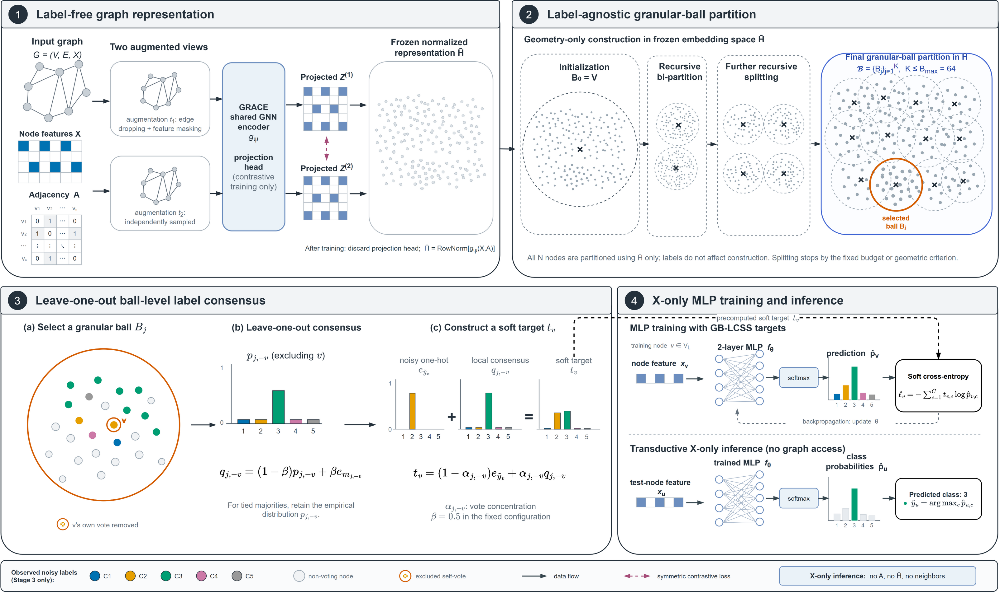
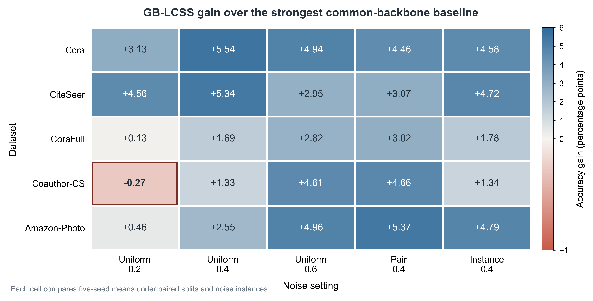
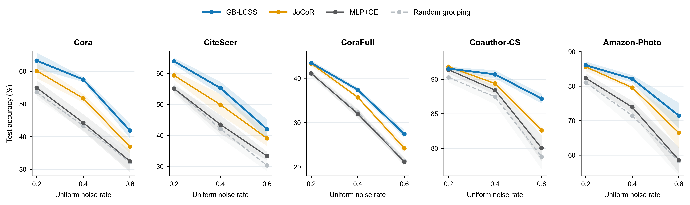
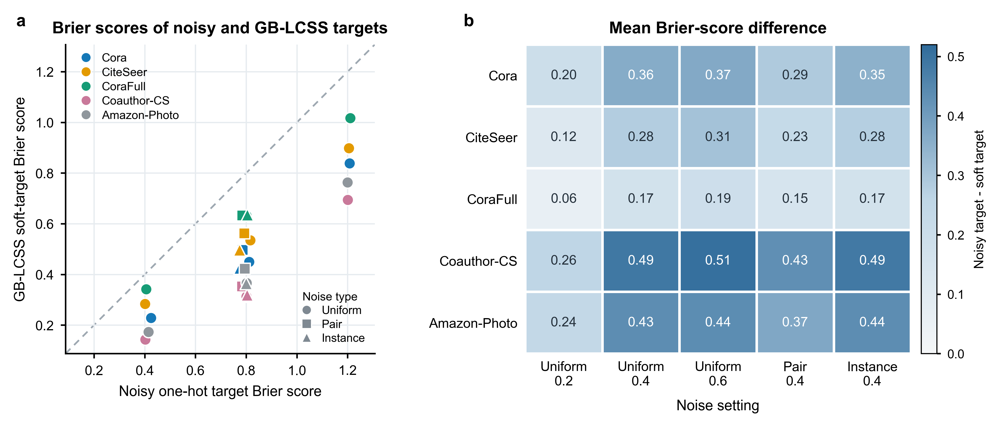
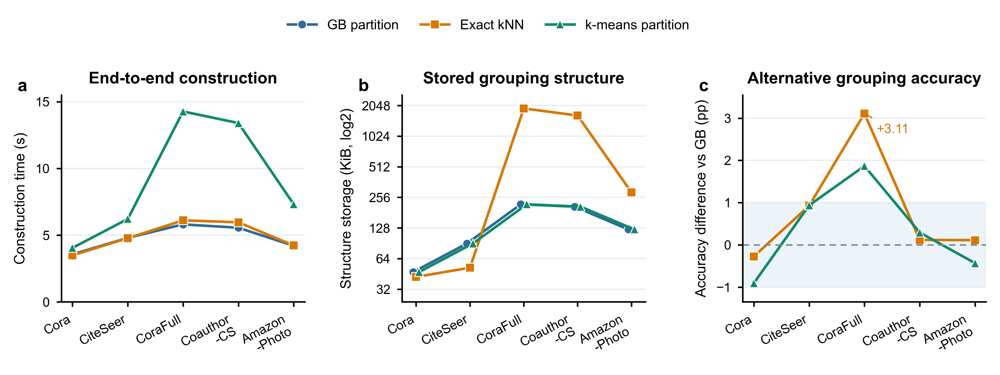

Granular-Ball Local-Consensus Soft Supervision for Noisy-Label Transductive Node Classification with Graph-Free Inference
Highlights
- Studies transductive X-only node classification under noisy training labels.
- Granular balls convert leave-one-out label consensus into soft supervision.
- Graph structure is used in training; inference requires node attributes only.
- GB-LCSS ranks first or ties first in 24/25 matched-backbone settings.
- Graph-teacher soft predictions further improve the X-only student.
Abstract
In many deployment scenarios, graph structure is available during training, whereas inference must rely on node attributes alone because relations may be unavailable, private, or too costly to retrieve online. Under noisy training labels, existing graph-based denoising methods generally continue to depend on graph structure, whereas most graph-free inference methods assume clean supervision. We propose Granular-Ball Local-Consensus Soft Supervision (GB-LCSS) for this setting. GB-LCSS partitions a frozen unsupervised graph contrastive representation into granular balls, derives soft targets from the labels of the other training nodes in each ball, and trains an MLP that takes only node attributes as input. Across five datasets evaluated under the full noise spectrum, GB-LCSS attains the highest or tied-highest mean accuracy among noise-robust methods with a matched MLP backbone in 24 of 25 settings and outperforms three structure-assisted soft-supervision baselines overall. A graph-teacher extension further improves accuracy by training the student on the teacher's soft predictions over all nodes while preserving X-only inference. These results show that local-consensus supervision provides a simple and effective way to train X-only node classifiers from noisy labels.
Keywords: label noise, node classification, graph-free inference, graph contrastive learning, granular-ball computing, knowledge distillation
1 Introduction
Graph neural networks (GNNs) aggregate neighborhood information through message passing and have become a standard approach to node classification [1,2]. Complete edge relations, however, are not always available at deployment, and online message passing incurs the additional cost of neighbor retrieval and multi-hop propagation [3]. Graph-free inference addresses this constraint by allowing graph structure during training while restricting the student model to node attributes at inference [3,14]. GLNN [3] and subsequent studies have shown that knowledge distillation, structural encoding, and structure-aware training can bring a multilayer perceptron (MLP) close to GNN accuracy in this setting [5--7,29,30]. We study transductive X-only node classification on a fixed graph: test nodes are visible in the training graph, but the deployed classifier reads only their attributes and does not access adjacency, graph-encoder outputs, or other graph-derived representations.
Noisy training labels introduce a further difficulty. Manual annotation, automated collection, and multi-source integration can all assign incorrect labels to nodes, and deep models tend to fit such corrupted supervision as training proceeds [8]. Graph label-noise methods such as NRGNN, RTGNN, DND-NET, and RNCGLN improve robustness through graph propagation, dual-network correction, or pseudo-labeling [9--12], but their denoising procedures or final predictions generally still require adjacency information. By contrast, most GNN-to-MLP and X-only node-classification studies assume clean training labels and focus on transferring structural knowledge, handling feature perturbations or missing features, or learning from scarce labels [3,5--7,14,15]. How to exploit graph structure during training to resist label noise while retaining an attribute-only classifier at inference therefore remains underexplored.
Existing graph-free inference methods mainly transfer structural knowledge to an MLP through its inputs, representations, or predictions [3,5--7,14,15]. Their supervision nevertheless originates from the observed training labels or from a teacher trained on those labels. When the labels are noisy, structure-aware training or distillation may pass the same errors to the student. Structural knowledge transfer alone does not directly repair errors in the supervision. Our approach instead extracts label consensus from the local geometry of an unsupervised graph contrastive representation and uses it to construct soft targets, thereby reducing reliance on any single noisy label.
To this end, we propose Granular-Ball Local-Consensus Soft Supervision (GB-LCSS). The method constructs label-agnostic granular balls in a frozen unsupervised graph contrastive representation space [34] and treats each ball as a local semantic unit for aggregating the noisy labels of its training nodes. For every training node, GB-LCSS removes the node's own label from the local vote and forms a soft target from the remaining label distribution and its concentration. These precomputed targets supervise an X-only MLP, whose input at inference is restricted to node attributes.
We evaluate GB-LCSS on five datasets under a full spectrum of label-noise conditions. It outperforms noise-robust methods with a matched MLP backbone in most settings and performs better overall than PosteL, ALS, and SALS under a common protocol. The basic method trains the MLP directly on local-consensus targets. An extension additionally trains a graph teacher and distills its soft predictions over all nodes into the X-only student to improve absolute accuracy.
The main contributions are as follows:
- We introduce GB-LCSS for transductive X-only inference under noisy training labels. It converts training-time graph information into soft supervision for an attribute-only MLP.
- We develop a label-agnostic granular-ball partition in a frozen graph contrastive representation space and use leave-one-out local consensus to aggregate the label distribution of the other training nodes in each ball. After training, the classifier requires only node attributes.
- Across five datasets evaluated under the full noise spectrum, GB-LCSS obtains the highest or tied-highest mean accuracy in 24 of 25 matched-backbone settings and outperforms PosteL, ALS, and SALS overall. Random-grouping, target-quality, and grouping-alternative experiments examine the roles of local membership, soft targets, and the grouping interface, while a graph-teacher extension evaluates the benefit of node-wise soft predictions over all nodes.
2 Related work
2.1 General label-noise learning
General label-noise learning mitigates corrupted supervision through sample selection, robust losses, label correction, and semi-supervised training. Co-teaching uses two networks to exchange small-loss samples, whereas JoCoR adds a consistency constraint between their predictions during joint sample selection [17,18]. SCE combines cross-entropy with reverse cross-entropy; ELR suppresses late-stage memorization of noisy labels; ANL and LogitClip improve loss robustness through a negative-learning objective and a constraint on the logit norm, respectively [19--22]. DivideMix partitions samples into labeled and unlabeled subsets for semi-supervised learning, FINE identifies reliable samples from class-wise principal feature directions, and CT estimates label reliability from confidence trajectories during training [23--25]. Designed primarily for label noise in independent samples, these methods serve as the matched-MLP noise-robust baselines in our experiments.
2.2 Label-noise learning on graphs
Label-noise learning on graphs must account for sparse labels, node dependence, and the propagation of corrupted supervision through graph structure. UnionNET aggregates labels from structurally adjacent nodes to estimate class distributions and uses them for sample reweighting and label correction [46]. NRGNN expands reliable supervision through edge prediction and pseudo-label mining, while RTGNN combines two networks with self-reinforced label correction and consistency regularization [9,10]. DND-NET decouples high-order graph propagation from a simple classifier and generates robust pseudo-labels using neighbor uncertainty, although its classifier still consumes graph-propagated features [11]. RNCGLN combines graph contrastive learning with label self-correction and accounts for perturbations to both labels and structure [12].
Recent methods further exploit topology-aware sample selection, structural reconstruction, and multi-view consistency. TSS incorporates graph topology into small-loss selection, TFR filters pseudo-labels through topological feature reconstruction, and ProCon detects noise and updates class prototypes according to label consistency among structurally adjacent nodes [40,41,47]. GD² detects noisy labels from disagreement between a node view and a structural view, whereas GNN-CFGD combines training memory, graph connectivity, and confidence to identify reliable nodes [42,44]. Prototype-Guided Supervision aggregates noisy labels into class prototypes and propagates prototype-level supervision [63]. These approaches repair graph supervision through node selection, structural reconstruction, or class-level prototypes.
Other studies use teacher distillation, topology adjustment, or robust aggregation. BO-NNC and SAMTD combine multiple graph teachers through bilevel optimization and consistency information, respectively [45,58]. GTA adjusts trusted and untrusted edges, whereas MILAB and HALF improve aggregation robustness through an information bottleneck and local homophily, respectively [50,51,59]. These methods identify noise or propagate supervision directly on the graph and therefore operate under different training and inference resources from an attribute-only classifier.
2.3 GNN-to-MLP distillation and graph-free node classification
Graph-free inference uses graph structure during training while avoiding message passing at deployment. Graph-MLP, an early example, trains an MLP with a neighborhood contrastive constraint, whereas GSDN performs neighborhood self-distillation at the prediction level [4,14]. GSDN also considers asymmetric label noise, but its main objective is neighborhood self-distillation rather than the systematic construction of supervision under label noise. SimMLP aligns MLP representations with graph-context representations through self-supervision, and ES-MLP extends this approach to homophilic and heterophilic graphs through edge splitting [15,33]. NOSMOG additionally introduces positional and structural features to strengthen an MLP [5]. These methods differ in their inference resources. NOSMOG relies on precomputed DeepWalk positional embeddings; the main structural branch of SA-MLP takes rows of the adjacency matrix as input, while its online variant separately estimates latent structure [27]. Our experiments impose X-only inference, under which the classifier receives only node attributes at test time.
Another line of work distills GNN knowledge into an MLP. GLNN established the basic GNN-to-MLP paradigm by transferring the predictions of a GNN teacher to a student that uses only node attributes [3]. Later methods broadened both the knowledge being distilled and the training procedure. FF-G2M decomposes low- and high-frequency knowledge; VQGraph represents local structure through a structural tokenizer and a discrete codebook; PGKD transfers class prototypes; and TINED combines teacher-parameter injection with Dirichlet-energy distillation [6,26,28,43]. KRD selects reliable teacher knowledge according to the stability of predictive entropy under feature perturbations [7]. AdaGMLP, ProGMLP, and SALE-MLP study adaptive distillation under label scarcity, the trade-off between accuracy and inference cost, and structure-aware latent representations, respectively [29--31]. Yu et al. [32] further used the neural tangent kernel to explain how GNN soft labels transfer a low-frequency graph bias to an MLP.
Training-time graph information can also be used to reconstruct soft labels without distillation. PosteL derives smoothed labels from model posteriors, ALS adapts the smoothing strength, and SALS further incorporates neighborhood structure [60--62]. Thus, graph knowledge can be transferred either through teacher predictions or directly through the supervision targets.
The basic GB-LCSS method follows the latter route: it extracts leave-one-out local consensus from label-agnostic granular balls in a frozen graph representation and uses the resulting targets to train an X-only classifier. The distillation extension trains a graph teacher on the same targets and then transfers its predictions over all nodes to the student.
2.4 Granular-ball computing and learning with noisy labels
Granular-ball computing replaces fine-grained samples with a smaller set of hyperspherical information granules and uses multi-granularity representations to balance computational efficiency and noise robustness [34]. For classification, GBkNN performs nearest-neighbor prediction over a set of granular balls according to the distance from a query to each ball, while granular-ball sampling uses ball purity and boundary structure to select representative samples [34,37]. VPGB jointly performs attribute reduction and classification on noisy data from a coarse-grained perspective [52]. MgCNL selects reliable samples according to granular-ball label confidence, and MgBIF aggregates labels within each ball to form pseudo-labels before sample selection [35,36]. GEAF further introduces an adaptive granular-ellipsoid partition independent of label purity to identify and correct erroneous labels within local granules [53]. These methods mainly use granular structures for classification, sample filtering, label correction, or reliable training-set construction.
Granular balls have also been introduced into graph learning. Supervised granular-ball graph coarsening and GBGC both compress a training graph by treating granular balls as supernodes: the former splits balls according to label purity, whereas the latter adapts the coarsening to the graph's multi-granularity structure [54,55]. MGGR recursively decomposes subregions within a graph and performs graph-level classification with a hierarchical encoder [56]. These studies show that granular balls can carry graph structure, but their principal aims are graph coarsening, faster training, or graph-level representation, and their final models still depend on the graph.
Combining granular balls with deep models has further extended their role in learning with noise. GBRAIN dynamically constructs granular balls for text classification and uses their centers and ball-level labels as coarse-grained training representations, reducing the influence of erroneous labels [57]. G-GBC extracts features with a CNN, adaptively generates granular balls through a Gaussian mixture model and Mahalanobis distance, and incorporates ball purity and weights into noise-robust training [48]. BNO-GB uses unsupervised, label-agnostic granular-ball clustering and combines ball-level and sample-level measures to distinguish clean samples, in-distribution noise, and out-of-distribution noise before optimizing open-intent representations [49]. GB-LCSS instead constructs label-agnostic granular balls on a frozen unsupervised graph representation and forms soft targets from the leave-one-out label consensus of the training nodes within each ball.
3 Method
3.1 Problem setting and notation
Consider a transductive attributed graph \(G=(\mathcal V,\mathcal E,X)\), where \(\mathcal V=\{v_1,\ldots,v_N\}\) is the node set, \(\mathcal E\) is the edge set, \(A\in\{0,1\}^{N\times N}\) is the adjacency matrix, and \(X=[x_1,\ldots,x_N]^\top\in\mathbb R^{N\times d}\) is the node-attribute matrix. Each node belongs to one of \(C\) classes. Let \(\mathcal V_L\) denote the set of training nodes. The observed label \(\tilde y_v\in\{1,\ldots,C\}\) of a training node may be corrupted by an unknown noise process. GB-LCSS does not require prior knowledge of the noise type, noise rate, or label transition matrix.
During training, the complete \(X\) and \(A\) are available for learning a structural representation and constructing supervision targets. Only the classifier \(f_\theta\) is retained after training. For a node \(v\), its predictive distribution is
We consider transductive X-only inference on the same fixed graph. Test nodes are visible in the training graph, but at inference the classifier receives only node attributes and does not access \(A\), neighboring nodes, the frozen representation, or the graph encoder.
Let \(\mathcal B=\{B_j\}_{j=1}^{K}\) be a granular-ball partition covering all nodes, and let \(T_j=B_j\cap\mathcal V_L\) be the training nodes in ball \(B_j\). For \(v\in T_j\), the subscript \(-v\) indicates that the label of node \(v\) is removed when local consensus is constructed. Other symbols are defined at first use.
3.2 Overview of GB-LCSS
GB-LCSS uses graph structure to construct soft supervision during training, while the trained classifier uses only node attributes. As illustrated in Fig. 1, GRACE first learns a label-agnostic node representation from the complete graph. Recursive 2-means partitioning then forms disjoint granular balls in the frozen representation space. Once the partition is fixed, a leave-one-out local-consensus target is constructed for each training node from the observed labels of the other training nodes in the same ball. An MLP is subsequently trained with node attributes \(X\) as input and these soft targets as supervision. Neither graph structure nor the frozen representation is needed at inference.

Fig. 1. Overview of GB-LCSS. Stage 1 learns a frozen label-agnostic representation, and Stage 2 constructs granular balls in this representation space. Stage 3 uses one ball to illustrate the construction of a leave-one-out local-consensus target. Stage 4 trains an X-only MLP with the resulting soft targets. Hollow nodes do not vote. Overlapping boundaries are two-dimensional projections of high-dimensional granular balls; each node belongs to exactly one ball. Graph structure and the frozen representation are used only during training, whereas the classifier receives only node attributes at inference.
3.3 Label-agnostic granular-ball construction in the frozen representation space
3.3.1 Frozen graph contrastive representation
We use GRACE [16] to obtain the representation space for granular-ball construction. GRACE creates two stochastic graph views through edge dropping and feature masking and optimizes a node-level contrastive objective that aligns the representations of the same node across the two views. Pretraining uses only \(X\) and \(A\), without node labels. After convergence, the encoder produces
We freeze \(\psi\), store \(H\) in node order, and L2-normalize each node representation before constructing the balls:
The normalized representation matrix is denoted by \(\bar H=[\bar h_1,\ldots,\bar h_N]^\top\). Granular-ball membership is determined solely by the geometry of this frozen representation; labels are introduced only after the partition has been completed. We select a representation according to whether the fixed construction rule yields a non-degenerate multi-ball partition. The representation-source comparison and pretraining-seed diagnostic in Appendix D.3 show that GRACE produces non-degenerate granular balls on all three diagnostic datasets and retains stable downstream gains across pretraining seeds.
3.3.2 Recursive bipartitioning
The granular-ball set is initialized as \(\mathcal B=\{\mathcal V\}\). For a ball \(B\subseteq\mathcal V\), its center and mean distance to the center are defined as
\(D(B)\) measures the average dispersion of the nodes around the ball center; a smaller value indicates a more compact region in the representation space. At each iteration, we collect candidate balls satisfying \(|B|\ge 2n_{\min}\) and attempt 2-means splits in descending order of \(D(B)\). The finite split budget is therefore allocated first to geometrically diffuse regions. If a candidate ball \(B\) is partitioned into \(B^{(1)}\) and \(B^{(2)}\), the size-weighted dispersion after splitting is
A split is accepted only if both child balls contain at least \(n_{\min}\) nodes and
for the first valid split encountered in that iteration. Equation (6) requires the weighted dispersion to decrease by at least a fraction \(\delta\), while the child-size constraint prevents very small regions. After each accepted split, the candidates and their ordering are recomputed. Recursion stops when an iteration contains no valid split or the number of balls reaches the budget \(B_{\max}\). The final partition contains at most \(B_{\max}\) disjoint granular balls, covers all nodes, and assigns each node to exactly one ball. Section 4.3 gives the experimental parameters.
In GB-LCSS, granular balls provide a fixed-budget, disjoint, and traceable region-based interface. Nodes in the same ball share region-level label statistics, and the leave-one-out distribution for any training node is obtained by subtracting its vote from the ball-level class histogram. No separate local statistic is required for each node. Because every node belongs to one ball, its soft target can be traced through the assigned region, the leave-one-out vote counts, and the consensus weight. In contrast, kNN forms an overlapping and potentially asymmetric neighborhood around every training node and aggregates labels separately for each query. Granular balls thus organize many node-wise neighborhoods into at most \(B_{\max}\) shared consensus units. Section 5.3.2 compares the predictive performance of three grouping implementations, and Section 5.5 reports their construction time and storage cost.
3.4 Granular-ball local-consensus soft supervision
3.4.1 Leave-one-out consensus target
For a granular ball \(B_j\), let \(T_j=B_j\cap\mathcal V_L\) denote its training nodes. To prevent a node's observed label from serving simultaneously as the label being corrected and as local evidence, GB-LCSS defines the leave-one-out voting set for each \(v\in T_j\) as
When \(|T_{j,-v}|\ge s_{\min}\), the noisy labels of the other training nodes in the ball define the empirical label distribution
Let
\(M_{j,-v}\) is the set of classes tied for the largest number of votes after node \(v\) has been removed. Ties are determined directly from integer vote counts. If the majority class is unique, denote it by \(m_{j,-v}\) and mix its one-hot vector with the empirical distribution. If multiple classes are tied, retain the empirical distribution:
Here, \(e_c\) is the one-hot vector for class \(c\), and \(\beta\) controls the mixture of the empirical distribution and the majority-class vector. Under a tie, no class is selected by its index, which keeps the target permutation-equivariant to class relabeling. Because a different node is removed each time, nodes in the same granular ball may have different \(p_{j,-v}\) and \(q_{j,-v}\).
3.4.2 Normalized consensus weight and node target
Using the uniform class probability \(1/C\) as the lower bound, we linearly normalize the largest vote proportion:
\(\alpha_{j,-v}\) measures the concentration of the leave-one-out label distribution relative to a uniform distribution, whereas the minimum-vote threshold \(s_{\min}\) specifies the sample support required to activate a local target. The two quantities therefore describe distributional concentration and effective vote count, respectively. For \(v\in T_j\), the final training target is
When the leave-one-out vote is close to uniform, \(\alpha_{j,-v}\) is small and the target remains close to the node's observed label. As the label distribution becomes more concentrated, the supervision shifts toward the local consensus \(q_{j,-v}\). If fewer than \(s_{\min}\) votes remain after removing the node, its original label is retained. This continuous interpolation avoids replacing a node label directly with the majority class of its ball.
Appendix E gives the condition under which the true majority class remains dominant within a ball under symmetric noise and an upper bound on the probability of a majority-class error with finitely many votes.
Labels are not used to determine granular-ball membership. Equations (7)--(12) construct supervision only from the observed labels of training nodes; validation and test labels are not involved in target construction or the training loss.
3.4.3 X-only student training
The student \(f_\theta\) is a two-layer MLP consisting of a linear layer, ReLU, BatchNorm, dropout, and an output linear layer. The hidden width is \(F=64\), and the dropout rate is 0.5. Its predictive distribution is given by Eq. (1), and it minimizes the soft cross-entropy over the training nodes:
After training, only \(f_\theta\) is retained, and prediction uses node attributes alone.
Algorithm 1 Recursive granular-ball partitioning in the frozen representation space
Input: normalized frozen representation H̄, node set V, parameters B_max, n_min, δ
Output: set of disjoint granular balls 𝓑
1: 𝓑 ← {V}
2: while |𝓑| < B_max do
3: 𝓑_cand ← {B∈𝓑 : |B|≥2n_min}, sorted by D(B) in descending order
4: accepted ← false
5: for B∈𝓑_cand do
6: Partition B into B^(1), B^(2) using 2-means
7: if min(|B^(1)|,|B^(2)|)≥n_min
8: and D_split(B)≤(1−δ)D(B) then
9: 𝓑 ← (𝓑\{B})∪{B^(1),B^(2)}
10: accepted ← true
11: break
12: end if
13: end for
14: if accepted=false then break
15: end while
16: return 𝓑Algorithm 2 Leave-one-out granular-ball soft-target construction
Input: granular-ball set 𝓑, noisy labels {ỹ_v | v∈V_L}, number of classes C, parameters s_min, β
Output: soft targets for training nodes {t_v | v∈V_L}
1: Initialize t_v ← e_{ỹ_v} for all v∈V_L
2: for B_j∈𝓑 do
3: T_j ← B_j∩V_L
4: n_j ← Σ_{u∈T_j} e_{ỹ_u}
5: for v∈T_j do
6: n_(j,−v) ← n_j−e_{ỹ_v}
7: if Σ_c n_(j,−v,c)<s_min then continue
8: p_(j,−v) ← n_(j,−v)/(Σ_c n_(j,−v,c))
9: r_(j,−v) ← max_c p_(j,−v,c)
10: M_(j,−v) ← {c:p_(j,−v,c)=r_(j,−v)}
11: if |M_(j,−v)|=1 then
12: q_(j,−v) ← (1−β)p_(j,−v)+βe_m, m∈M_(j,−v)
13: else q_(j,−v) ← p_(j,−v)
14: α_(j,−v) ← max(0,(r_(j,−v)−1/C)/(1−1/C))
15: t_v ← (1−α_(j,−v))e_{ỹ_v}+α_(j,−v)q_(j,−v)
16: end for
17: end for
18: return {t_v | v∈V_L}3.5 Consensus-teacher distillation extension
Consensus-teacher distillation broadens the set of nodes through which structural knowledge is transferred to the student. The extension first trains a graph teacher with granular-ball consensus and then asks the X-only student to fit the teacher's node-wise soft predictions over all nodes. The soft targets of basic GB-LCSS are defined only for training nodes, whereas the extension uses the teacher's predictive distribution over the complete graph.
The teacher is trained directly with the GB-LCSS targets defined in Section 3.4. For a training node \(v\in T_j\), its observed label is first excluded, after which \(p_{j,-v}\), \(q_{j,-v}\), and \(\alpha_{j,-v}\) are computed from Eqs. (8)--(11). The teacher target is
Equation (14) is the same leave-one-out consensus target used by basic GB-LCSS, with \(\beta=0.5\). In the extension, this target supervises a graph-structured teacher. The teacher \(g_\phi\) is a two-layer GCN that takes the original node attributes \(X\) and adjacency matrix \(A\) as input:
The frozen representation \(\bar H\) determines the granular balls and their consensus targets but is not used as a teacher input. The teacher minimizes the following objective over training nodes:
After selecting a teacher checkpoint, we freeze \(g_\phi\) and convert the structural information learned by the teacher into temperature-scaled soft predictions over all nodes:
The X-only student then fits these predictions on all \(N\) nodes:
The basic method applies local-consensus targets only to \(\mathcal V_L\), whereas Eq. (18) fits teacher predictions on every node. We set \(\tau=1\), and the student loss consists solely of cross-entropy against the teacher's soft predictions. After training, only the student MLP is retained; the teacher, adjacency matrix, and frozen representation are not used for inference.
3.6 Computational complexity and inference resources
Relative to directly training an MLP, the additional computation of GB-LCSS occurs before student training and consists of one GRACE pretraining run and one granular-ball construction. Denote the GRACE training cost by \(T_{\mathrm{GRACE}}\). The resulting representation, which requires \(O(Nd_h)\) storage, can be reused across noise settings and downstream seeds on the same dataset.
On the frozen representation, running 2-means for \(I\) iterations on a node subset \(S\) costs \(O(I|S|d_h)\). Candidate balls within an iteration are disjoint, so their total number of nodes does not exceed \(N\). At most \(B_{\max}-1\) splits can be accepted during construction. A conservative upper bound on candidate scans and 2-means calls is therefore
Because \(B_{\max}\) is fixed, the construction cost is approximately linear in the number of nodes \(N\) and the representation dimension \(d_h\). The frozen representation dominates storage during construction; node assignments, ball centers, and class histograms require an additional \(O(N+B_{\max}(d_h+C))\) space. Leave-one-out statistics are obtained by subtracting the current node's vote from its ball-level histogram, and generating all training targets costs \(O(|\mathcal V_L|C)\) time. The current implementation stores targets in an \(N\times C\) matrix, requiring \(O(NC)\) space.
Once the soft targets have been generated, student training is identical to that of a standard two-layer MLP. The current full-batch implementation computes MLP outputs for all \(N\) nodes in each epoch and evaluates the loss on the training-node mask. For \(T_S\) training epochs, the resulting complexity is \(O(T_SN(dF+FC))\). The inference complexity for one node is
Deployment stores only the \(O(dF+FC)\) student parameters. The adjacency matrix, frozen representation, granular-ball partition, and neighbor index are discarded, so inference cost does not grow with the number of edges \(|\mathcal E|\). The distillation extension adds the training cost of a two-layer GCN teacher, which is likewise removed after training. Section 5.5 reports GRACE pretraining time and peak GPU memory, together with the construction time and storage cost of the three grouping interfaces.
4 Experimental setup
4.1 Datasets and evaluation scope
Cora, CiteSeer, CoraFull, Coauthor-CS, and Amazon-Photo were evaluated under the full noise spectrum: uniform 0.2/0.4/0.6, pair 0.4, and instance-dependent 0.4. We additionally conducted a uniform 0.4 breadth evaluation on six datasets, and extended CiteSeerFull to the full noise spectrum. Appendix I reports these results.
Cora and CiteSeer are taken from the standard citation-network benchmarks [38], and the other datasets use public versions common in graph-learning evaluations [39]. Table 1 summarizes the five full-spectrum datasets. Edge homophily is the proportion of undirected edges whose endpoints share the same class and is reported only as a graph characteristic.
Table 1. Dataset statistics. Edges are counted as undirected, and the number of training nodes is based on the 20% split.
| Dataset | Nodes | Undirected edges | Features | Classes | Training nodes | Edge homophily |
|---|---|---|---|---|---|---|
| Cora | 2,708 | 5,278 | 1,433 | 7 | 541 | 0.810 |
| CiteSeer | 3,327 | 4,552 | 3,703 | 6 | 665 | 0.736 |
| CoraFull | 19,793 | 63,421 | 8,710 | 70 | 3,958 | 0.567 |
| Coauthor-CS | 18,333 | 81,894 | 6,805 | 15 | 3,666 | 0.808 |
| Amazon-Photo | 7,650 | 119,081 | 745 | 8 | 1,530 | 0.827 |
4.2 Data splits and label noise
We adopt transductive node classification on a fixed graph. The attributes and adjacency relations of the complete graph are available during training, so the attributes and topology of test nodes provide unlabeled context for GRACE pretraining and granular-ball partitioning. Because graph-learning results can be sensitive to data splits [39], all methods share the same percentage split: 20% training nodes, 10% validation nodes, and 70% test nodes. Under the default protocol, noise is injected only into training labels. Clean validation labels are used for checkpoint selection, and test labels are used only for final evaluation.
Uniform noise satisfies \(P_{ii}=1-\rho\) and \(P_{ij}=\rho/(C-1)\), with \(\rho\in\{0.2,0.4,0.6\}\). Pair noise uses \(\rho=0.4\) and flips class \(i\) to \(((i-2)\bmod C)+1\) with probability \(\rho\), leaving it unchanged with probability \(1-\rho\). Instance-dependent noise also has a mean flip rate of 0.4 and assigns probabilities to incorrect classes according to node attributes and class-dependent random mappings. Noise generation follows NoisyGL [13]. For each dataset and seed, all methods share the same split and noisy training-label realization.
4.3 Compared methods and training-resource tiers
We organize the compared methods into two training-resource tiers. The first tier matches the depth and width of the MLP classifier, the noisy-label budget, and the inference input. It includes MLP+CE, Small-loss, Co-teaching, JoCoR, SCE, ELR, LogitClip, and GB-LCSS. GB-LCSS uses the same single-network classifier but additionally accesses the complete graph and a frozen GRACE representation during training. Co-teaching and JoCoR retain their original dual-network designs. The second tier uses graph information during training but still reads only node attributes at inference. It includes PosteL, ALS, SALS [60--62], Graph-MLP [4], and GSDN [14]. PosteL retains its posterior-target construction with iterative pseudo-labeling disabled. The other methods retain the core objectives of their published formulations and are evaluated with our data splits, noise realizations, and X-only student. Appendix H specifies implementation identity, protocol adaptations, and method-specific parameters.
For the graph-teacher extension, we compare GLNN-style response distillation, FF-G2M, KRD, VQGraph, and the granular-ball consensus teacher [3,6,7,26]. FF-G2M is reimplemented with a common student backbone while retaining its low- and high-frequency distillation objectives. KRD and VQGraph preserve reliable-knowledge selection and soft-codebook distillation, respectively, and are adapted to the common noise protocol. Every route retrains both teacher and student for each seed, and the final student uses only node attributes.
All basic methods use the same two-layer MLP backbone with a hidden width of 64 and a dropout rate of 0.5. Dual-network methods use two independently initialized copies of this backbone. Models are trained for at most 200 epochs with Adam, a learning rate of 0.01, and weight decay of \(5\times10^{-4}\). Small-loss, Co-teaching, and JoCoR set their forget-rate schedules from the known synthetic noise rate; the other basic methods do not use this information.
GB-LCSS uses \(B_{\max}=64\), \(n_{\min}=32\), \(\delta=0.05\), \(s_{\min}=2\), and \(\beta=0.5\) in all experiments. The 2-means procedure uses Euclidean distance and k-means++ initialization. GRACE uses label-agnostic, dataset-level configurations, and its encoder is frozen after pretraining. Appendix H gives the complete parameters and their sources.
4.4 Statistical analysis
We report the mean test accuracy and sample standard deviation over five paired seeds. The main experiments fix one pretrained representation \(H\) for each dataset; the paired seeds vary the data split, noise realization, and downstream initialization. Appendix D.3 provides a diagnostic across GRACE pretraining seeds. For each dataset and noise setting, we apply a two-sided one-sample \(t\)-test to the seed-wise accuracy differences and compute 95% confidence intervals from a \(t\) distribution with four degrees of freedom. Holm correction is applied separately to three families of 25 comparisons: GB-LCSS versus random grouping, MLP+CE, and JoCoR. These tests assess the stability of paired differences under the present protocol. Appendix B reports the complete paired results.
5 Results and analysis
5.1 Comparison with noise-robust methods using a matched MLP backbone
Table 2. Test accuracy under uniform 0.4 for noise-robust methods with a matched X-only MLP classifier.
Values are test accuracy (%; mean ± standard deviation over five paired seeds), with the highest mean in each column shown in bold. All classifiers use the same MLP depth and width and share the same noisy-label budget and inference input. Dual-network methods retain their original training structures, while GB-LCSS additionally uses the complete graph and frozen GRACE representation during training.
| Method | Cora | CiteSeer | CoraFull | Coauthor-CS | Amazon-Photo |
|---|---|---|---|---|---|
| MLP+CE | 44.24±2.62 | 43.50±3.02 | 31.98±0.98 | 88.42±0.62 | 73.90±1.80 |
| Small-loss | 51.95±1.97 | 49.70±3.07 | 33.04±0.50 | 89.06±0.88 | 77.25±1.62 |
| Co-teaching | 46.83±1.78 | 46.24±2.89 | 34.39±0.24 | 88.80±0.97 | 78.21±1.00 |
| JoCoR | 51.72±1.30 | 49.91±3.37 | 35.70±0.32 | 89.38±0.61 | 79.57±0.53 |
| SCE | 43.60±1.86 | 42.09±3.47 | 29.29±0.45 | 88.37±0.53 | 76.08±3.11 |
| ELR | 44.28±1.38 | 43.17±3.95 | 32.14±0.67 | 88.29±0.73 | 73.93±2.12 |
| LogitClip | 47.50±1.50 | 46.57±3.52 | 34.69±1.17 | 88.40±0.21 | 74.98±2.38 |
| GB-LCSS | 57.49±0.76 | 55.24±2.04 | 37.39±0.51 | 90.71±0.59 | 82.12±1.08 |
GB-LCSS achieves the highest mean accuracy on all five datasets, exceeding the strongest baseline on each dataset by 1.33--5.54 percentage points. The gains are larger on Cora, CiteSeer, and Amazon-Photo. MLP+CE already reaches 88.42% on Coauthor-CS, where the additional gain of GB-LCSS is smaller.
The same pattern holds across the full noise spectrum. Relative to MLP+CE and JoCoR, GB-LCSS yields mean gains of 7.74 and 3.46 percentage points and positive differences in 25/25 and 24/25 settings, respectively. Among the seven noise-robust baselines with a matched MLP backbone, GB-LCSS obtains the highest or tied-highest mean in 24/25 settings. The sole exception is Coauthor-CS under uniform 0.2, where it trails JoCoR by 0.27 percentage points. Figure 2 summarizes the gain over the strongest matched-backbone baseline in each setting; Appendices A and B provide the complete results and paired statistics.

Fig. 2. Accuracy gain of GB-LCSS over the strongest matched-backbone baseline. Each cell is the five-seed mean accuracy of GB-LCSS minus the highest mean among the seven noise-robust baselines with a matched MLP backbone for the same dataset and noise setting, in percentage points. Blue denotes an advantage for GB-LCSS and red an advantage for the baseline. Coauthor-CS under uniform 0.2 is the only setting with a negative difference.
Figure 3 reports absolute accuracy as the uniform noise rate changes. GB-LCSS outperforms all three plotted comparators in 14 of the 15 dataset--noise-rate combinations, the exception again being Coauthor-CS under uniform 0.2. Accuracy decreases for every method as the noise rate rises from 0.2 to 0.6, but on all five datasets GB-LCSS consistently retains an advantage over random grouping.

Fig. 3. Test accuracy under different uniform label-noise rates. Curves show the mean over five paired seeds, and shaded bands show the sample standard deviation. The vertical range is set separately for each dataset. All methods share the same data splits and noisy training-label realizations. Random grouping preserves the granular-ball size distribution and changes only node assignments.
On the six supplementary datasets, GB-LCSS outperforms the strongest matched-backbone baseline on three datasets and exceeds random size-matched grouping on all six. Appendix I gives the complete results.
5.2 Structure-assisted X-only methods
Table 3. Test accuracy of structure-assisted X-only methods under uniform 0.4.
Values are test accuracy under uniform 0.4 (%; mean ± standard deviation over five seeds). All methods may use graph information during training but read only node attributes at inference. Bold values denote the highest mean in each column.
| Method | Use of graph information during training | Cora | CiteSeer | CoraFull | Coauthor-CS | Amazon-Photo |
|---|---|---|---|---|---|---|
| PosteL | Structure-assisted soft labels | 47.09±1.81 | 45.84±2.48 | 36.51±1.01 | 84.74±1.51 | 80.59±0.94 |
| ALS | Neighborhood label smoothing | 45.20±1.24 | 43.77±2.76 | 31.91±1.05 | 88.55±0.86 | 73.41±2.75 |
| SALS | Structure-aware label smoothing | 48.27±2.50 | 47.20±1.69 | 37.06±0.78 | 88.85±0.82 | 77.86±0.79 |
| Graph-MLP | Multi-hop structural supervision | 63.23±3.07 | 57.23±1.85 | 37.05±0.91 | 88.95±0.43 | 77.05±1.24 |
| GSDN | Neighborhood self-distillation | 55.97±4.29 | 50.36±3.39 | 35.80±0.66 | 86.55±0.78 | 73.31±2.00 |
| GB-LCSS | Leave-one-out granular-ball consensus in a frozen graph representation | 57.49±0.76 | 55.24±2.04 | 37.39±0.51 | 90.71±0.59 | 82.12±1.08 |
Across all 25 settings, the mean paired differences of GB-LCSS over PosteL, ALS, and SALS are 5.69, 7.71, and 4.69 percentage points, with positive differences in 24/25, 25/25, and 24/25 settings, respectively. Section 4.3 and Appendix H describe the protocol adaptations, and Appendix G reports the full noise spectrum.
Graph-MLP and GB-LCSS exhibit different dataset preferences. Graph-MLP is ahead by 5.74 and 1.99 percentage points on Cora and CiteSeer, whereas GB-LCSS leads by 0.34, 1.76, and 5.07 points on CoraFull, Coauthor-CS, and Amazon-Photo. The relative advantage of multi-hop structural supervision and local consensus in a frozen representation therefore varies across datasets.
5.3 Ablation and mechanism analysis
5.3.1 Role of the local-consensus target
Random size-matched grouping preserves the number of balls, their size distribution, the target formula, and the student-training procedure, while randomizing the correspondence between nodes and local units. GB-LCSS outperforms this control in all 25 dataset--noise settings, with a mean gain of 8.69 percentage points. The result indicates that the actual membership structure in the frozen representation provides useful information for local-consensus supervision.
Leave-one-out voting reduces the influence of a node's own noisy label on its local target. Compared with the self-vote ablation, the mean gain of GB-LCSS across settings ranges from 0.08 to 1.03 percentage points over the five datasets. Under uniform 0.4, GB-LCSS also outperforms uniform smoothing and training-prior smoothing on every dataset. Appendix D gives the complete results.
To assess how closely the soft targets agree with clean supervision, Fig. 4 uses clean training labels as a reference and computes the multiclass Brier score post hoc. For a target matrix \(Y^{\mathrm{tar}}\), we use
where \(y_v\) is the clean label of training node \(v\). We evaluate both the original noisy one-hot targets and the GB-LCSS soft targets as \(Y^{\mathrm{tar}}\). The five-seed mean for every one of the 25 dataset--noise settings lies below the equality line: the GB-LCSS targets always have a lower mean squared probabilistic error than the original noisy one-hot targets. The mean Brier-score reduction ranges from 0.06 to 0.51, with the largest improvements on Coauthor-CS and Amazon-Photo.

Fig. 4. Post-hoc quality diagnostic for the GB-LCSS soft targets. (a) The horizontal axis is the multiclass Brier score of the original noisy one-hot targets, and the vertical axis is that of the GB-LCSS soft targets. Each marker is the five-seed mean for one dataset--noise setting. Colors identify datasets; circles, squares, and triangles denote uniform, pair, and instance-dependent noise, respectively. The dashed line indicates equality. (b) Each cell is the five-seed mean of the original-target Brier score minus the soft-target Brier score; a positive value means that the soft targets have lower squared probabilistic error.
5.3.2 Role of the granular-ball partition
The kNN and k-means alternatives use the same leave-one-out target as the main method. For each seed, kNN matches its neighborhood size to the mean number of training votes per ball and excludes the query node. The number of k-means clusters matches the number of granular balls for that seed, and the current node is likewise removed from its cluster target. Relative to the better of the two alternatives, granular balls differ by \(+0.27\), \(-0.94\), \(-3.11\), \(-0.29\), and \(-0.11\) percentage points on the five full-spectrum datasets. Except on CoraFull, the gap among the three grouping implementations remains below one percentage point. Local-consensus targets can therefore be implemented with different grouping schemes. In GB-LCSS, granular balls serve as a fixed-budget region-organization interface, while the particular grouping scheme mainly determines local resolution.
5.4 Clean-label control
To distinguish robustness to label noise from a general regularization effect, we also evaluate clean training labels by setting \(\rho=0\) and leaving all other data splits and training settings unchanged. The accuracy differences between GB-LCSS and MLP+CE on Cora, CiteSeer, CoraFull, Coauthor-CS, and Amazon-Photo are \(-0.24\), \(+2.00\), \(-0.38\), \(-0.87\), and \(-1.75\) percentage points, respectively. Except on CiteSeer, GB-LCSS does not improve accuracy with clean labels.
This control shows that the gains of GB-LCSS over MLP+CE arise primarily when the training labels are corrupted. Local consensus provides no consistent additional benefit under clean-label training.
5.5 Construction and preprocessing cost
All timing and GPU-memory measurements were collected on the same workstation with an AMD Radeon RX 7700 XT, using Python 3.12.10 and PyTorch 2.9.1+rocm7.2.1. GB-LCSS and MLP+CE use the same student and therefore have the same parameter count, inference input, and forward complexity. The additional cost comes from GRACE representation learning and granular-ball construction before student training. For seed 0, one-time GRACE pretraining on Cora, CiteSeer, and CoraFull takes 0.07, 0.13, and 74.48 minutes and reaches peak GPU memory of 0.40, 0.67, and 12.73 GiB, respectively. The frozen representation can be reused for every noise setting and downstream seed on the same dataset.
Together with the classification results in Section 5.3.2, Fig. 5 compares the grouping cost of granular balls, exact kNN, and k-means. Granular balls have a lower end-to-end construction time on three of the five datasets. On CoraFull, Coauthor-CS, and Amazon-Photo, their disjoint regions also require less storage than node-wise exact-kNN neighborhoods. Granular balls provide a fixed-budget shared-region representation, although their accuracy and cost vary with dataset size and local geometry.

Fig. 5. Implementation profile of three local-consensus grouping interfaces. (a) End-to-end construction time for the grouping structure and target statistics. (b) Size of the grouping structure stored for subsequent target construction. (c) Test-accuracy difference of exact kNN and k-means relative to granular balls; positive values favor the alternative grouping, and the blue region denotes \(\pm1\) percentage point. Time and storage are implementation measurements for seed 0, and accuracy is the five-seed mean under uniform 0.4. kNN is an exact implementation that excludes the query node itself.
6 Graph-teacher distillation extension
6.1 From training-node targets to distillation over all nodes
Basic GB-LCSS trains the MLP directly with local-consensus targets on the training nodes. The distillation extension additionally trains a graph teacher and asks the student to fit the teacher's soft predictions over all nodes. The two routes use different training resources, but both students receive only node attributes after training.
The extension experiments cover Cora, CiteSeer, CoraFull, Coauthor-CS, and Amazon-Photo under uniform 0.4 and uniform 0.6, and compare how different forms of teacher supervision and knowledge transfer affect the X-only student.
6.2 Comparison of graph-knowledge transfer routes
In addition to basic GLNN-style response distillation, we include three representative GNN-to-MLP routes. FF-G2M transfers low-frequency neighborhood knowledge and high-frequency edge-difference knowledge; KRD selects reliable knowledge according to the teacher's stability under feature perturbations; and VQGraph represents local structure through a soft codebook [6,7,26]. The granular-ball consensus route trains a GCN(X) teacher with the GB-LCSS target in Eq. (14). All routes share the same data splits and noise realizations and independently train their teachers and the same two-layer X-only student for each seed.
Table 4. Comparison of basic GB-LCSS and five graph-knowledge transfer routes.
Values are test accuracy (%; mean ± standard deviation over five seeds), with the highest mean in each column shown in bold. All distillation routes use the same two-layer student, which reads only node attributes at inference. FF-G2M is a common-student-backbone reimplementation that retains the original core objectives; KRD and VQGraph are mechanism adaptations. The granular-ball consensus teacher is trained with \(X\) and the adjacency matrix, while the frozen \(H\) is used only to construct the granular-ball target in Eq. (14).
(a) Uniform 0.4
| Training route | Cora | CiteSeer | CoraFull | Coauthor-CS | Amazon-Photo |
|---|---|---|---|---|---|
| Basic GB-LCSS (without distillation) | 57.49±0.76 | 55.24±2.04 | 37.39±0.51 | 90.71±0.59 | 82.12±1.08 |
| GCN(X)+CE teacher (GLNN-style) | 77.95±2.62 | 66.09±1.38 | 58.74±0.82 | 93.20±0.09 | 89.86±0.77 |
| FF-G2M | 77.65±2.97 | 65.80±0.49 | 56.58±0.93 | 91.58±0.24 | 84.82±0.84 |
| KRD | 71.77±2.20 | 64.96±1.03 | 47.12±0.95 | 91.39±0.49 | 85.17±0.94 |
| VQGraph | 78.89±2.34 | 65.64±1.72 | 58.52±0.77 | 93.25±0.09 | 90.54±0.85 |
| Granular-ball consensus teacher | 81.35±1.05 | 69.27±1.57 | 57.29±0.24 | 93.83±0.21 | 90.40±0.77 |
(b) Uniform 0.6
| Training route | Cora | CiteSeer | CoraFull | Coauthor-CS | Amazon-Photo |
|---|---|---|---|---|---|
| Basic GB-LCSS (without distillation) | 41.86±2.30 | 42.02±3.14 | 27.43±0.89 | 87.19±0.69 | 71.45±3.75 |
| GCN(X)+CE teacher (GLNN-style) | 65.50±3.28 | 53.30±4.42 | 51.63±2.02 | 91.13±0.58 | 84.80±1.48 |
| FF-G2M | 63.63±2.16 | 52.32±4.20 | 45.78±2.90 | 86.50±1.01 | 73.08±2.82 |
| KRD | 61.28±1.17 | 54.17±3.14 | 41.61±2.43 | 89.80±0.29 | 80.30±0.51 |
| VQGraph | 65.75±2.72 | 53.34±4.47 | 52.01±0.65 | 90.71±1.24 | 84.77±2.19 |
| Granular-ball consensus teacher | 71.34±3.91 | 58.93±4.62 | 52.32±1.26 | 92.40±0.65 | 86.81±1.94 |
The granular-ball consensus teacher improves on basic GB-LCSS on all five datasets at both noise rates. The gains range from 3.12 to 23.86 percentage points under uniform 0.4 and from 5.21 to 29.48 points under uniform 0.6.
Among the three general GNN-to-MLP methods, VQGraph performs best overall. The granular-ball consensus teacher obtains the highest mean in eight of the ten dataset--noise combinations and outperforms the GCN(X)+CE teacher in nine. Under uniform 0.6, it exceeds the best of the three general routes on all five datasets. The exceptions are CoraFull and Amazon-Photo under uniform 0.4, where GCN(X)+CE and VQGraph achieve the highest means, respectively; the granular-ball consensus teacher trails them by 1.45 and 0.14 percentage points. Every route removes the graph teacher after training, and the student uses only node attributes at inference.
7 Conclusion
This study considered transductive node classification with noisy training labels, where graph structure is available during training but inference is restricted to node attributes. GB-LCSS constructs label-agnostic granular balls in a frozen graph contrastive representation and uses leave-one-out local consensus to provide soft supervision for an X-only MLP. Across five datasets evaluated under the full noise spectrum, GB-LCSS outperformed noise-robust methods with a matched MLP backbone in most settings and performed better overall than PosteL, ALS, and SALS under a common protocol.
Granular balls organize node-wise neighborhoods into at most 64 disjoint regions, allowing ball-level statistics to be reused and each soft target to be traced to its region and leave-one-out label distribution. Random-group experiments confirmed the role of actual local membership, while kNN and k-means alternatives showed that local consensus is not tied to a single grouping algorithm. Granular balls therefore provide GB-LCSS with a fixed-budget, disjoint, and traceable region-based implementation. As a secondary extension, the granular-ball consensus teacher trained the student with soft predictions over all nodes and improved on basic GB-LCSS in all ten settings in Table 4.
The present experiments use synthetic label noise, clean validation labels, and transductive evaluation on a fixed graph; the local targets also depend on a pretrained and frozen graph representation. Real annotation noise, inductive inference on new nodes, and model selection without clean validation labels remain open. Future work may introduce vote-aware consensus weights and examine ball-level statistics for streaming updates and federated transfer.
8 Data and code availability
All graph datasets used in this study are public benchmarks. The supplementary material archives complete configurations, seed-wise results, hashes of data splits and noise realizations, statistical scripts, frozen \(H\), and the corresponding SHA256 values. For Cora, CiteSeer, and CoraFull, it also includes checkpoints, \(H\), loss records, and cost manifests for three pretraining seeds, allowing the representations to be re-extracted and verified. For Coauthor-CS and Amazon-Photo, \(H\) is archived to reproduce downstream results, but the encoder checkpoints were not retained. The reproducibility manifest specifies the available reproduction scope for each dataset. Anonymous code, configurations, seed-wise results, and the reproducibility manifest will accompany the submission.
References
[1] T. N. Kipf, M. Welling, Semi-supervised classification with graph convolutional networks, in: Proc. ICLR, 2017.
[2] P. Velickovic, G. Cucurull, A. Casanova, A. Romero, P. Lio, Y. Bengio, Graph attention networks, in: Proc. ICLR, 2018.
[3] S. Zhang, Y. Liu, Y. Sun, N. Shah, Graph-less neural networks: Teaching old MLPs new tricks via distillation, in: Proc. ICLR, 2022.
[4] Y. Hu, H. You, Z. Wang, Z. Wang, E. Zhou, Y. Gao, Graph-MLP: Node classification without message passing in graph, arXiv preprint arXiv:2106.04051, 2021.
[5] Y. Tian, C. Zhang, Z. Guo, X. Zhang, N. V. Chawla, Learning MLPs on graphs: A unified view of effectiveness, robustness, and efficiency, in: Proc. ICLR, 2023.
[6] L. Yang, Y. Tian, M. Xu, Z. Liu, S. Hong, W. Qu, W. Zhang, B. Cui, M. Zhang, J. Leskovec, VQGraph: Rethinking graph representation space for bridging GNNs and MLPs, in: Proc. ICLR, 2024.
[7] L. Wu, H. Lin, Y. Huang, S. Z. Li, Quantifying the knowledge in GNNs for reliable distillation into MLPs, in: Proc. ICML, 2023.
[8] C. Zhang, S. Bengio, M. Hardt, B. Recht, O. Vinyals, Understanding deep learning (still) requires rethinking generalization, Communications of the ACM 64 (3) (2021) 107–115.
[9] E. Dai, C. Aggarwal, S. Wang, NRGNN: Learning a label noise resistant graph neural network on sparsely and noisily labeled graphs, in: Proc. ACM SIGKDD, 2021.
[10] S. Qian, H. Ying, R. Hu, J. Zhou, J. Chen, D. Z. Chen, J. Wu, Robust training of graph neural networks via noise governance, in: Proc. WSDM, 2023, pp. 607--615. https://doi.org/10.1145/3539597.3570369.
[11] K. Ding, X. Ma, Y. Liu, S. Pan, Divide and denoise: Empowering simple models for robust semi-supervised node classification against label noise, in: Proc. ACM SIGKDD, 2024, pp. 574--584.
[12] Y. Zhu, L. Feng, Z. Deng, Y. Chen, R. Amor, M. Witbrock, Robust node classification on graph data with graph and label noise, in: Proc. AAAI, 2024.
[13] Z. Wang, D. Sun, S. Zhou, H. Wang, J. Fan, L. Huang, J. Bu, NoisyGL: A comprehensive benchmark for graph neural networks under label noise, Advances in Neural Information Processing Systems 37 (2024) 38142--38170.
[14] L. Wu, J. Xia, H. Lin, Z. Gao, Z. Liu, G. Zhao, S. Z. Li, Teaching yourself: Graph self-distillation on neighborhood for node classification, arXiv preprint arXiv:2210.02097, 2022.
[15] Z. Wang, Z. Zhang, C. Zhang, Y. Ye, Training MLPs on graphs without supervision, in: Proc. WSDM, 2025.
[16] Y. Zhu, Y. Xu, F. Yu, Q. Liu, S. Wu, L. Wang, Deep graph contrastive representation learning, in: ICML Workshop on Graph Representation Learning and Beyond, 2020.
[17] B. Han, Q. Yao, X. Yu, G. Niu, M. Xu, W. Hu, I. W. Tsang, M. Sugiyama, Co-teaching: Robust training of deep neural networks with extremely noisy labels, in: Proc. NeurIPS, 2018.
[18] H. Wei, L. Feng, X. Chen, B. An, Combating noisy labels by agreement: A joint training method with co-regularization, in: Proc. CVPR, 2020.
[19] Y. Wang, X. Ma, Z. Chen, Y. Luo, J. Yi, J. Bailey, Symmetric cross entropy for robust learning with noisy labels, in: Proc. ICCV, 2019.
[20] S. Liu, J. Niles-Weed, N. Razavian, C. Fernandez-Granda, Early-learning regularization prevents memorization of noisy labels, in: Proc. NeurIPS, 2020.
[21] X. Ye, X. Li, S. Dai, T. Liu, Y. Sun, W. Tong, Active negative loss functions for learning with noisy labels, in: Proc. NeurIPS, 2023.
[22] H. Wei, H. Zhuang, R. Xie, L. Feng, G. Niu, B. An, Y. Li, Mitigating memorization of noisy labels by clipping the model prediction, in: Proc. ICML, 2023.
[23] J. Li, R. Socher, S. C. H. Hoi, DivideMix: Learning with noisy labels as semi-supervised learning, in: Proc. ICLR, 2020.
[24] T. Kim, J. Ko, S. Cho, J. Choi, S.-Y. Yun, FINE samples for learning with noisy labels, in: Proc. NeurIPS, 2021.
[25] W. Pan, W. Wei, F. Zhu, Y. Deng, Enhanced sample selection with confidence tracking: Identifying correctly labeled yet hard-to-learn samples in noisy data, in: Proc. AAAI, 39 (19) (2025) 19795–19803. https://doi.org/10.1609/aaai.v39i19.34180.
[26] L. Wu, H. Lin, Y. Huang, T. Fan, S. Z. Li, Extracting low-/high-frequency knowledge from graph neural networks and injecting it into MLPs: An effective GNN-to-MLP distillation framework, in: Proc. AAAI, 2023.
[27] J. Chen, M. Bai, S. Chen, J. Gao, J. Zhang, J. Pu, SA-MLP: Distilling graph knowledge from GNNs into structure-aware MLP, Transactions on Machine Learning Research (2024).
[28] T. Wu, Z. Zhao, J. Wang, X. Bai, L. Wang, N. Wong, Y. Yang, Edge-free but structure-aware: Prototype-guided knowledge distillation from GNNs to MLPs, in: Proc. COLING, 2025, pp. 5656–5667.
[29] W. Lu, Z. Guan, W. Zhao, Y. Yang, AdaGMLP: AdaBoosting GNN-to-MLP knowledge distillation, in: Proc. ACM SIGKDD, 2024, pp. 2060--2071. https://doi.org/10.1145/3637528.3671699.
[30] W. Lu, Z. Guan, W. Zhao, Y. Yang, Y. Sun, Z. Liang, Y. Zhan, D. Tao, ProGMLP: A progressive framework for GNN-to-MLP knowledge distillation with efficient trade-offs, in: Proc. AAAI, 40 (29) (2026) 24088–24096. https://doi.org/10.1609/aaai.v40i29.39587.
[31] H. Pal, S. Malik, R. Patel, A. Malhotra, SALE-MLP: Structure aware latent embeddings for GNN to graph-free MLP distillation, in: Proc. IJCAI, 2025, pp. 6003–6011. https://doi.org/10.24963/ijcai.2025/668.
[32] Z. Yu, M. Lin, W. Li, Z. Yin, S. Xiao, S. Lu, Demystifying GNN-to-MLP knowledge transfer: Theoretical grounding and dual-stream distillation method, in: Proc. AAAI, 40 (33) (2026) 28005–28013. https://doi.org/10.1609/aaai.v40i33.40025.
[33] M. Kohn, M. Hoffmann, A. Scherp, Edge-splitting MLP: Node classification on homophilic and heterophilic graphs without message passing, in: Proc. Third Learning on Graphs Conference, PMLR 269 (2025) 11:1--11:21. https://proceedings.mlr.press/v269/kohn25a.html.
[34] S. Xia, Y. Liu, X. Ding, G. Wang, H. Yu, Y. Luo, Granular ball computing classifiers for efficient, scalable and robust learning, Information Sciences 483 (2019) 136–152.
[35] F. Dunkin, X. Li, H. Li, G. Wu, C. Hu, S. S. Ge, MgCNL: A sample separation approach via multi-granularity balls for fault diagnosis with the interference of noisy labels, IEEE Transactions on Automation Science and Engineering 22 (2025) 7748–7761. https://doi.org/10.1109/TASE.2024.3469000.
[36] F. Dunkin, X. Li, C. Hu, G. Wu, H. Li, X. Lu, Z. Zhang, Like draws to like: A multi-granularity ball-intra fusion approach for fault diagnosis models to resists misleading by noisy labels, Advanced Engineering Informatics 60 (2024) 102425. https://doi.org/10.1016/j.aei.2024.102425.
[37] S. Xia, S. Zheng, G. Wang, X. Gao, B. Wang, Granular ball sampling for noisy label classification or imbalanced classification, IEEE Transactions on Neural Networks and Learning Systems 34 (4) (2023) 2144–2155. https://doi.org/10.1109/TNNLS.2021.3105984.
[38] P. Sen, G. Namata, M. Bilgic, L. Getoor, B. Galligher, T. Eliassi-Rad, Collective classification in network data, AI Magazine 29 (3) (2008) 93–106.
[39] O. Shchur, M. Mumme, A. Bojchevski, S. Gunnemann, Pitfalls of graph neural network evaluation, in: Relational Representation Learning Workshop, NeurIPS, 2018. https://www.cs.cit.tum.de/daml/gnn-benchmark/.
[40] Z. Wang, Y. Bei, S. Zhou, Z. Zhou, J. Fan, H. Xue, H. Wang, J. Bu, Learning from graph: Mitigating label noise on graph through topological feature reconstruction, in: Proc. CIKM, 2025, pp. 3261–3270. https://doi.org/10.1145/3746252.3761185.
[41] K. Li, J. Sun, J. Lou, Z. Feng, H. Zhou, C. Wu, G. Xue, W. Zhao, J. Li, Leveraging peer-informed label consistency for robust graph neural networks with noisy labels, in: Proc. IJCAI, 2025, pp. 5598–5606. https://doi.org/10.24963/ijcai.2025/623.
[42] K. Li, J. Lou, J. Sun, H. Zeng, W. Li, C. Wu, Y. Luo, W. Zhao, S. Du, J. Li, GD²: Robust graph learning under label noise via dual-view prediction discrepancy, Advances in Neural Information Processing Systems 38 (2025).
[43] Z. Zhou, Z. Ding, J. Shi, L. Qing, S. Shen, TINED: GNNs-to-MLPs by teacher injection and Dirichlet energy distillation, in: Proc. ICML, PMLR 267 (2025) 78616--78632. https://proceedings.mlr.press/v267/zhou25a.html.
[44] S. Li, B. Zhang, J. Song, G. Ruan, C. Wang, J. Xie, Graph neural networks with coarse- and fine-grained division for mitigating label noise and sparsity, Neural Networks 187 (2025) 107338. https://doi.org/10.1016/j.neunet.2025.107338.
[45] B. Hu, G. Wen, Y. Huang, Y. Liu, X. Zhu, Structure-aware multi-teacher distillation for noise node classification, Information Processing & Management 63 (7) (2026) 104877. https://www.sciencedirect.com/science/article/pii/S0306457326002682.
[46] Y. Li, J. Yin, L. Chen, Unified robust training for graph neural networks against label noise, in: Proc. PAKDD, Lecture Notes in Computer Science 12712 (2021) 528--540. https://doi.org/10.1007/978-3-030-75762-5_42.
[47] Y. Wu, J. Yao, X. Xia, J. Yu, R. Wang, B. Han, T. Liu, Mitigating label noise on graphs via topological sample selection, in: Proc. ICML, PMLR 235 (2024) 53944--53972. https://proceedings.mlr.press/v235/wu24ae.html.
[48] J. Yang, Q. Liu, X. Cao, F. Li, X. Yang, G-GBC: A Gaussian mixture-based granular ball computing method for robust CNN classification under noisy labels, Knowledge-Based Systems 341 (2026) 115754. https://doi.org/10.1016/j.knosys.2026.115754.
[49] Y. Li, X. Ouyang, J. Zhang, C. Pan, L. Ren, X. Yang, Beneficial noise learning for open intent classification via granular-ball representation, Pattern Recognition 177 (2026) 113283. https://doi.org/10.1016/j.patcog.2026.113283.
[50] Z. Liu, H. Yu, X. Luo, Mitigating label noise in graph learning with information bottleneck-guided aggregation and adversarial consistency, Pattern Recognition 180 (2026) 114271. https://doi.org/10.1016/j.patcog.2026.114271.
[51] S. Li, B. Zhang, M. Cao, J. Song, X. Cheng, C. Wang, HALF: A homophily-aware loss fusion for robust learning under label noise in heterophilic graphs, Information Sciences 754 (2026) 123714. https://doi.org/10.1016/j.ins.2026.123714.
[52] X. Peng, P. Wang, S. Xia, C. Wang, W. Chen, VPGB: A granular-ball based model for attribute reduction and classification with label noise, Information Sciences 611 (2022) 504--521. https://doi.org/10.1016/j.ins.2022.08.066.
[53] J. Zhang, X. Sun, B. Huang, T. Wang, H. Li, X. Jia, GEAF: A label noise filtering method based on adaptive partitioning of granular ellipsoids, Information Sciences 742 (2026) 123324. https://doi.org/10.1016/j.ins.2026.123324.
[54] S. Xia, X. Ma, Z. Liu, C. Liu, S. Zhao, G. Wang, Graph coarsening via supervised granular-ball for scalable graph neural network training, in: Proc. AAAI, 39 (12) (2025) 12872--12880. https://doi.org/10.1609/aaai.v39i12.33404.
[55] S. Xia, G. Wang, G. Xu, S. Zhao, G. Wang, GBGC: Efficient and adaptive graph coarsening via granular-ball computing, in: Proc. IJCAI, 2025, pp. 3489--3497. https://doi.org/10.24963/ijcai.2025/388.
[56] J. Ni, S. Xia, Y. Guan, G. Xu, L. Chen, Y. Liu, Y. Wang, Multi-granularity graph refinement via granular ball for graph classification, Neurocomputing 686 (2026) 133713. https://doi.org/10.1016/j.neucom.2026.133713.
[57] Z. Wang, T. Zhang, S. Xia, L. Lin, G. Wang, GBRAIN: Combating textual label noise by granular-ball based robust training, in: Proc. ACM ICMR, 2024, pp. 357--365. https://doi.org/10.1145/3652583.3658084.
[58] Y. Liu, Z. Wu, Z. Lu, C. Nie, G. Wen, Y. Zhu, X. Zhu, Noisy node classification by bi-level optimization based multi-teacher distillation, in: Proc. AAAI, 39 (18) (2025) 19033--19040. https://doi.org/10.1609/aaai.v39i18.34095.
[59] M. Zhou, X. Han, W. Wei, G. Yan, Graph topology adaptive judgment against node label noise, Knowledge-Based Systems 328 (2025) 114162. https://doi.org/10.1016/j.knosys.2025.114162.
[60] J. Heo, M. Park, D. Kim, Posterior label smoothing for node classification, in: Proc. AAAI, 40 (26) (2026) 21708--21716. https://doi.org/10.1609/aaai.v40i26.39321.
[61] K. Zhou, S.-H. Choi, Z. Liu, N. Liu, F. Yang, R. Chen, L. Li, X. Hu, Adaptive label smoothing to regularize large-scale graph training, in: Proc. 2023 SIAM International Conference on Data Mining, 2023, pp. 55--63. https://doi.org/10.1137/1.9781611977653.ch7.
[62] Y. Wang, Y. Cai, Y. Liang, W. Wang, H. Ding, M. Chen, J. Tang, B. Hooi, Structure-aware label smoothing for graph neural networks, arXiv preprint arXiv:2112.00499 (2021). https://arxiv.org/abs/2112.00499.
[63] Q. Li, X. Li, D. Li, J. Wang, Prototype-guided supervision for graph learning with noisy and sparse labels, in: Proc. AAAI, 40 (27) (2026) 23105--23113. https://doi.org/10.1609/aaai.v40i27.39477.
Supplementary material
Appendix A. Full noise spectrum for the principal comparisons
A.1 Cora
Table A.1 Full noise-spectrum results for the principal methods on Cora. Values are test accuracy (%; mean ± standard deviation over five seeds).
| Method | Uniform 0.2 | Uniform 0.4 | Uniform 0.6 | Pair 0.4 | Instance 0.4 |
|---|---|---|---|---|---|
| MLP+CE | 54.96±2.22 | 44.24±2.62 | 32.51±3.38 | 42.83±2.19 | 45.33±2.22 |
| Small-loss | 59.84±1.29 | 51.95±1.97 | 36.72±1.09 | 46.99±2.77 | 51.82±0.94 |
| Co-teaching | 58.62±1.97 | 46.83±1.78 | 33.29±3.48 | 44.26±2.30 | 47.35±2.24 |
| JoCoR | 60.12±2.25 | 51.72±1.30 | 36.92±2.14 | 45.91±2.38 | 52.26±1.01 |
| SCE | 53.57±2.17 | 43.60±1.86 | 32.66±3.78 | 41.40±2.04 | 43.29±4.35 |
| ELR | 52.95±2.38 | 44.28±1.38 | 32.82±3.51 | 41.83±1.75 | 45.93±2.26 |
| LogitClip | 58.63±1.35 | 47.50±1.50 | 34.44±2.67 | 44.90±1.21 | 48.09±1.73 |
| Leave-one-out random size-matched grouping | 53.57±1.99 | 43.31±1.40 | 32.18±2.54 | 39.28±1.34 | 43.34±1.70 |
| GB-LCSS | 63.25±2.46 | 57.49±0.76 | 41.86±2.30 | 51.45±2.80 | 56.84±1.67 |
A.2 CiteSeer
Table A.2 Full noise-spectrum results for the principal methods on CiteSeer. Values are test accuracy (%; mean ± standard deviation over five seeds).
| Method | Uniform 0.2 | Uniform 0.4 | Uniform 0.6 | Pair 0.4 | Instance 0.4 |
|---|---|---|---|---|---|
| MLP+CE | 55.10±1.17 | 43.50±3.02 | 33.35±1.36 | 45.15±1.67 | 44.33±2.04 |
| Small-loss | 59.26±1.94 | 49.70±3.07 | 37.73±2.86 | 48.16±2.56 | 50.75±3.33 |
| Co-teaching | 57.05±0.82 | 46.24±2.89 | 34.19±2.92 | 46.25±2.29 | 46.81±1.68 |
| JoCoR | 59.36±1.43 | 49.91±3.37 | 39.07±2.47 | 48.63±2.35 | 50.86±2.45 |
| SCE | 52.12±3.28 | 42.09±3.47 | 30.59±2.83 | 42.22±1.56 | 40.92±4.23 |
| ELR | 53.62±1.48 | 43.17±3.95 | 30.80±2.70 | 42.69±2.43 | 41.94±3.27 |
| LogitClip | 58.75±1.44 | 46.57±3.52 | 34.47±1.69 | 45.78±1.06 | 47.41±2.64 |
| Leave-one-out random size-matched grouping | 55.13±1.85 | 42.08±2.88 | 30.36±1.88 | 43.92±1.67 | 43.07±2.00 |
| GB-LCSS | 63.92±1.12 | 55.24±2.04 | 42.02±3.14 | 51.70±2.14 | 55.58±2.54 |
A.3 CoraFull
Table A.3 Full noise-spectrum results for the principal methods on CoraFull. Values are test accuracy (%; mean ± standard deviation over five seeds).
| Method | Uniform 0.2 | Uniform 0.4 | Uniform 0.6 | Pair 0.4 | Instance 0.4 |
|---|---|---|---|---|---|
| MLP+CE | 41.11±0.46 | 31.98±0.98 | 21.16±0.81 | 28.14±1.17 | 31.33±0.85 |
| Small-loss | 41.58±0.94 | 33.04±0.50 | 21.51±0.98 | 30.15±1.11 | 32.90±0.87 |
| Co-teaching | 41.70±1.05 | 34.39±0.24 | 22.84±1.38 | 30.28±0.52 | 33.39±0.90 |
| JoCoR | 43.33±0.70 | 35.70±0.32 | 24.20±0.98 | 31.45±0.80 | 35.17±0.51 |
| SCE | 37.93±0.72 | 29.29±0.45 | 17.79±1.33 | 26.98±0.51 | 29.68±1.06 |
| ELR | 41.08±0.53 | 32.14±0.67 | 21.32±0.98 | 28.91±1.44 | 31.52±0.83 |
| LogitClip | 41.24±0.78 | 34.69±1.17 | 24.62±0.72 | 31.23±1.84 | 34.19±0.17 |
| Leave-one-out random size-matched grouping | 41.02±0.92 | 32.30±0.85 | 21.41±0.84 | 28.49±0.78 | 31.43±0.79 |
| GB-LCSS | 43.46±0.57 | 37.39±0.51 | 27.43±0.89 | 34.46±1.23 | 36.95±0.53 |
A.4 Coauthor-CS
Table A.4 Full noise-spectrum results for the principal methods on Coauthor-CS. Values are test accuracy (%; mean ± standard deviation over five seeds).
| Method | Uniform 0.2 | Uniform 0.4 | Uniform 0.6 | Pair 0.4 | Instance 0.4 |
|---|---|---|---|---|---|
| MLP+CE | 91.38±0.54 | 88.42±0.62 | 80.03±1.91 | 75.91±1.34 | 87.44±1.15 |
| Small-loss | 91.50±0.49 | 89.06±0.88 | 81.65±0.91 | 80.13±1.50 | 88.97±1.02 |
| Co-teaching | 91.70±0.29 | 88.80±0.97 | 81.88±0.72 | 79.06±1.30 | 88.95±0.97 |
| JoCoR | 91.81±0.25 | 89.38±0.61 | 82.58±0.41 | 81.02±1.62 | 89.17±0.85 |
| SCE | 90.63±0.47 | 88.37±0.53 | 79.43±1.45 | 79.77±2.51 | 87.99±0.56 |
| ELR | 91.21±0.60 | 88.29±0.73 | 80.54±1.28 | 78.03±1.48 | 87.78±0.94 |
| LogitClip | 91.32±0.43 | 88.40±0.21 | 79.96±1.64 | 81.57±0.53 | 88.60±0.75 |
| Leave-one-out random size-matched grouping | 90.26±0.70 | 87.46±1.07 | 78.78±1.82 | 75.99±0.60 | 86.87±1.56 |
| GB-LCSS | 91.54±0.26 | 90.71±0.59 | 87.19±0.69 | 86.24±1.18 | 90.51±0.43 |
A.5 Amazon-Photo
Table A.5 Full noise-spectrum results for the principal methods on Amazon-Photo. Values are test accuracy (%; mean ± standard deviation over five seeds).
| Method | Uniform 0.2 | Uniform 0.4 | Uniform 0.6 | Pair 0.4 | Instance 0.4 |
|---|---|---|---|---|---|
| MLP+CE | 82.34±1.39 | 73.90±1.80 | 58.60±3.77 | 62.61±4.31 | 69.13±3.00 |
| Small-loss | 84.96±0.58 | 77.25±1.62 | 61.40±3.72 | 66.70±5.73 | 73.00±1.25 |
| Co-teaching | 85.21±0.51 | 78.21±1.00 | 63.29±5.00 | 67.24±6.97 | 73.59±1.19 |
| JoCoR | 85.60±1.26 | 79.57±0.53 | 66.48±4.43 | 66.94±6.36 | 74.80±1.79 |
| SCE | 84.74±0.94 | 76.08±3.11 | 57.82±4.07 | 66.51±6.96 | 73.08±2.54 |
| ELR | 82.31±1.98 | 73.93±2.12 | 59.32±4.53 | 66.07±5.25 | 69.41±2.70 |
| LogitClip | 83.78±1.02 | 74.98±2.38 | 62.42±4.37 | 68.52±4.20 | 72.90±1.05 |
| Leave-one-out random size-matched grouping | 81.03±1.23 | 71.45±3.29 | 58.30±4.17 | 62.56±4.24 | 67.56±2.89 |
| GB-LCSS | 86.07±1.05 | 82.12±1.08 | 71.45±3.75 | 73.89±3.73 | 79.59±0.88 |
Appendix B. Paired statistical tests
Mean differences and 95% confidence intervals are expressed in percentage points. Each setting uses the five same-seed paired differences in a two-sided one-sample \(t\)-test; confidence intervals are computed from a \(t\) distribution with four degrees of freedom. Holm correction is applied separately within three comparison families of 25 tests each.
Table B.1 Setting-wise paired statistics for GB-LCSS versus leave-one-out random grouping, MLP+CE, and JoCoR.
| Dataset | Noise | Comparison | Mean difference | 95% CI | Positive seeds | Holm p |
|---|---|---|---|---|---|---|
| Cora | Uniform 0.2 | GB-LCSS−leave-one-out random grouping | +9.68 | [+7.16, +12.20] | 5/5 | 0.005674 |
| Cora | Uniform 0.2 | GB-LCSS−MLP+CE | +8.30 | [+5.59, +11.00] | 5/5 | 0.01143 |
| Cora | Uniform 0.2 | GB-LCSS−JoCoR | +3.13 | [+0.55, +5.72] | 5/5 | 0.1122 |
| Cora | Uniform 0.4 | GB-LCSS−leave-one-out random grouping | +14.17 | [+12.71, +15.63] | 5/5 | 0.0002813 |
| Cora | Uniform 0.4 | GB-LCSS−MLP+CE | +13.25 | [+10.81, +15.68] | 5/5 | 0.002252 |
| Cora | Uniform 0.4 | GB-LCSS−JoCoR | +5.77 | [+3.60, +7.95] | 5/5 | 0.03085 |
| Cora | Uniform 0.6 | GB-LCSS−leave-one-out random grouping | +9.68 | [+6.39, +12.96] | 5/5 | 0.00973 |
| Cora | Uniform 0.6 | GB-LCSS−MLP+CE | +9.35 | [+4.54, +14.16] | 5/5 | 0.01143 |
| Cora | Uniform 0.6 | GB-LCSS−JoCoR | +4.94 | [+1.79, +8.09] | 5/5 | 0.08171 |
| Cora | Pair 0.4 | GB-LCSS−leave-one-out random grouping | +12.17 | [+7.23, +17.11] | 5/5 | 0.01189 |
| Cora | Pair 0.4 | GB-LCSS−MLP+CE | +8.62 | [+5.74, +11.50] | 5/5 | 0.01143 |
| Cora | Pair 0.4 | GB-LCSS−JoCoR | +5.54 | [+2.90, +8.18] | 5/5 | 0.06022 |
| Cora | Instance 0.4 | GB-LCSS−leave-one-out random grouping | +13.51 | [+12.08, +14.94] | 5/5 | 0.0003041 |
| Cora | Instance 0.4 | GB-LCSS−MLP+CE | +11.51 | [+9.50, +13.53] | 5/5 | 0.001937 |
| Cora | Instance 0.4 | GB-LCSS−JoCoR | +4.58 | [+2.27, +6.89] | 5/5 | 0.06231 |
| CiteSeer | Uniform 0.2 | GB-LCSS−leave-one-out random grouping | +8.79 | [+6.87, +10.71] | 5/5 | 0.003559 |
| CiteSeer | Uniform 0.2 | GB-LCSS−MLP+CE | +8.81 | [+7.00, +10.63] | 5/5 | 0.003176 |
| CiteSeer | Uniform 0.2 | GB-LCSS−JoCoR | +4.56 | [+2.87, +6.26] | 5/5 | 0.03085 |
| CiteSeer | Uniform 0.4 | GB-LCSS−leave-one-out random grouping | +13.16 | [+11.26, +15.06] | 5/5 | 0.0009797 |
| CiteSeer | Uniform 0.4 | GB-LCSS−MLP+CE | +11.74 | [+9.99, +13.50] | 5/5 | 0.001139 |
| CiteSeer | Uniform 0.4 | GB-LCSS−JoCoR | +5.34 | [+2.51, +8.16] | 5/5 | 0.06231 |
| CiteSeer | Uniform 0.6 | GB-LCSS−leave-one-out random grouping | +11.66 | [+9.60, +13.72] | 5/5 | 0.001813 |
| CiteSeer | Uniform 0.6 | GB-LCSS−MLP+CE | +8.67 | [+4.92, +12.42] | 5/5 | 0.01143 |
| CiteSeer | Uniform 0.6 | GB-LCSS−JoCoR | +2.95 | [+1.09, +4.81] | 5/5 | 0.08171 |
| CiteSeer | Pair 0.4 | GB-LCSS−leave-one-out random grouping | +7.78 | [+5.04, +10.53] | 5/5 | 0.009835 |
| CiteSeer | Pair 0.4 | GB-LCSS−MLP+CE | +6.55 | [+3.98, +9.13] | 5/5 | 0.01143 |
| CiteSeer | Pair 0.4 | GB-LCSS−JoCoR | +3.07 | [+2.06, +4.07] | 5/5 | 0.02034 |
| CiteSeer | Instance 0.4 | GB-LCSS−leave-one-out random grouping | +12.51 | [+9.97, +15.05] | 5/5 | 0.002993 |
| CiteSeer | Instance 0.4 | GB-LCSS−MLP+CE | +11.25 | [+8.48, +14.01] | 5/5 | 0.005604 |
| CiteSeer | Instance 0.4 | GB-LCSS−JoCoR | +4.72 | [+3.63, +5.80] | 5/5 | 0.006514 |
| CoraFull | Uniform 0.2 | GB-LCSS−leave-one-out random grouping | +2.44 | [+1.48, +3.40] | 5/5 | 0.01189 |
| CoraFull | Uniform 0.2 | GB-LCSS−MLP+CE | +2.35 | [+1.46, +3.25] | 5/5 | 0.01143 |
| CoraFull | Uniform 0.2 | GB-LCSS−JoCoR | +0.13 | [-0.86, +1.12] | 3/5 | 0.8524 |
| CoraFull | Uniform 0.4 | GB-LCSS−leave-one-out random grouping | +5.09 | [+4.32, +5.87] | 5/5 | 0.001117 |
| CoraFull | Uniform 0.4 | GB-LCSS−MLP+CE | +5.41 | [+4.51, +6.32] | 5/5 | 0.001673 |
| CoraFull | Uniform 0.4 | GB-LCSS−JoCoR | +1.69 | [+0.86, +2.52] | 5/5 | 0.06231 |
| CoraFull | Uniform 0.6 | GB-LCSS−leave-one-out random grouping | +6.02 | [+5.16, +6.89] | 5/5 | 0.0009797 |
| CoraFull | Uniform 0.6 | GB-LCSS−MLP+CE | +6.27 | [+5.52, +7.03] | 5/5 | 0.000529 |
| CoraFull | Uniform 0.6 | GB-LCSS−JoCoR | +3.23 | [+1.89, +4.57] | 5/5 | 0.0417 |
| CoraFull | Pair 0.4 | GB-LCSS−leave-one-out random grouping | +5.98 | [+4.75, +7.20] | 5/5 | 0.002993 |
| CoraFull | Pair 0.4 | GB-LCSS−MLP+CE | +6.32 | [+4.66, +7.98] | 5/5 | 0.006809 |
| CoraFull | Pair 0.4 | GB-LCSS−JoCoR | +3.02 | [+2.10, +3.93] | 5/5 | 0.01662 |
| CoraFull | Instance 0.4 | GB-LCSS−leave-one-out random grouping | +5.52 | [+4.23, +6.80] | 5/5 | 0.004259 |
| CoraFull | Instance 0.4 | GB-LCSS−MLP+CE | +5.62 | [+4.37, +6.86] | 5/5 | 0.003933 |
| CoraFull | Instance 0.4 | GB-LCSS−JoCoR | +1.78 | [+1.22, +2.34] | 5/5 | 0.01796 |
| Coauthor-CS | Uniform 0.2 | GB-LCSS−leave-one-out random grouping | +1.28 | [+0.70, +1.85] | 5/5 | 0.01189 |
| Coauthor-CS | Uniform 0.2 | GB-LCSS−MLP+CE | +0.16 | [-0.33, +0.65] | 3/5 | 0.4182 |
| Coauthor-CS | Uniform 0.2 | GB-LCSS−JoCoR | -0.27 | [-0.41, -0.13] | 0/5 | 0.06231 |
| Coauthor-CS | Uniform 0.4 | GB-LCSS−leave-one-out random grouping | +3.25 | [+1.96, +4.55] | 5/5 | 0.01189 |
| Coauthor-CS | Uniform 0.4 | GB-LCSS−MLP+CE | +2.29 | [+1.66, +2.93] | 5/5 | 0.007858 |
| Coauthor-CS | Uniform 0.4 | GB-LCSS−JoCoR | +1.33 | [+1.07, +1.59] | 5/5 | 0.003739 |
| Coauthor-CS | Uniform 0.6 | GB-LCSS−leave-one-out random grouping | +8.41 | [+5.72, +11.10] | 5/5 | 0.008729 |
| Coauthor-CS | Uniform 0.6 | GB-LCSS−MLP+CE | +7.16 | [+4.58, +9.75] | 5/5 | 0.01143 |
| Coauthor-CS | Uniform 0.6 | GB-LCSS−JoCoR | +4.61 | [+3.37, +5.85] | 5/5 | 0.01137 |
| Coauthor-CS | Pair 0.4 | GB-LCSS−leave-one-out random grouping | +10.25 | [+8.67, +11.83] | 5/5 | 0.001121 |
| Coauthor-CS | Pair 0.4 | GB-LCSS−MLP+CE | +10.32 | [+8.97, +11.67] | 5/5 | 0.0007012 |
| Coauthor-CS | Pair 0.4 | GB-LCSS−JoCoR | +5.22 | [+3.82, +6.62] | 5/5 | 0.01137 |
| Coauthor-CS | Instance 0.4 | GB-LCSS−leave-one-out random grouping | +3.65 | [+2.12, +5.17] | 5/5 | 0.01189 |
| Coauthor-CS | Instance 0.4 | GB-LCSS−MLP+CE | +3.07 | [+2.15, +4.00] | 5/5 | 0.009357 |
| Coauthor-CS | Instance 0.4 | GB-LCSS−JoCoR | +1.34 | [+0.76, +1.92] | 5/5 | 0.04476 |
| Amazon-Photo | Uniform 0.2 | GB-LCSS−leave-one-out random grouping | +5.03 | [+3.82, +6.25] | 5/5 | 0.004573 |
| Amazon-Photo | Uniform 0.2 | GB-LCSS−MLP+CE | +3.72 | [+2.63, +4.81] | 5/5 | 0.008928 |
| Amazon-Photo | Uniform 0.2 | GB-LCSS−JoCoR | +0.46 | [-0.99, +1.92] | 3/5 | 0.8524 |
| Amazon-Photo | Uniform 0.4 | GB-LCSS−leave-one-out random grouping | +10.66 | [+6.55, +14.78] | 5/5 | 0.01189 |
| Amazon-Photo | Uniform 0.4 | GB-LCSS−MLP+CE | +8.22 | [+5.17, +11.26] | 5/5 | 0.01143 |
| Amazon-Photo | Uniform 0.4 | GB-LCSS−JoCoR | +2.55 | [+1.02, +4.07] | 5/5 | 0.07844 |
| Amazon-Photo | Uniform 0.6 | GB-LCSS−leave-one-out random grouping | +13.15 | [+9.63, +16.67] | 5/5 | 0.005843 |
| Amazon-Photo | Uniform 0.6 | GB-LCSS−MLP+CE | +12.85 | [+8.39, +17.31] | 5/5 | 0.01143 |
| Amazon-Photo | Uniform 0.6 | GB-LCSS−JoCoR | +4.96 | [+0.60, +9.32] | 5/5 | 0.1122 |
| Amazon-Photo | Pair 0.4 | GB-LCSS−leave-one-out random grouping | +11.32 | [+8.02, +14.63] | 5/5 | 0.007517 |
| Amazon-Photo | Pair 0.4 | GB-LCSS−MLP+CE | +11.28 | [+9.10, +13.46] | 5/5 | 0.00259 |
| Amazon-Photo | Pair 0.4 | GB-LCSS−JoCoR | +6.95 | [+1.90, +12.00] | 5/5 | 0.09355 |
| Amazon-Photo | Instance 0.4 | GB-LCSS−leave-one-out random grouping | +12.03 | [+8.45, +15.61] | 5/5 | 0.007517 |
| Amazon-Photo | Instance 0.4 | GB-LCSS−MLP+CE | +10.46 | [+6.95, +13.98] | 5/5 | 0.01143 |
| Amazon-Photo | Instance 0.4 | GB-LCSS−JoCoR | +4.79 | [+2.43, +7.15] | 5/5 | 0.06231 |
Appendix C. Sensitivity to noisy validation labels
This experiment examines the effect of validation-label corruption on model selection under uniform 0.4 noise. The noisy-validation protocol keeps the training-noise realization fixed and independently corrupts validation nodes with the same uniform transition mechanism and noise rate, using \(seed+1{,}000{,}003\). Test labels remain unchanged. GB-LCSS and random grouping use the leave-one-out consensus target defined in the main text; the GSDN row is a protocol adaptation.
Table C.1 Test accuracy under clean- and noisy-validation protocols (%; mean ± standard deviation over five seeds).
| Validation protocol | Dataset | Method | Test accuracy |
|---|---|---|---|
| Clean validation labels | CiteSeer | GB-LCSS | 55.24±2.04 |
| Clean validation labels | CiteSeer | Leave-one-out random size-matched grouping | 42.08±2.88 |
| Clean validation labels | CiteSeer | GSDN (protocol adaptation) | 50.36±3.39 |
| Clean validation labels | CiteSeer | MLP+CE | 43.50±3.02 |
| Clean validation labels | CiteSeer | JoCoR | 49.91±3.37 |
| Clean validation labels | CiteSeer | PosteL (protocol adaptation) | 45.84±2.48 |
| Clean validation labels | Cora | GB-LCSS | 57.49±0.76 |
| Clean validation labels | Cora | Leave-one-out random size-matched grouping | 43.31±1.40 |
| Clean validation labels | Cora | GSDN (protocol adaptation) | 55.97±4.29 |
| Clean validation labels | Cora | MLP+CE | 44.24±2.62 |
| Clean validation labels | Cora | JoCoR | 51.72±1.30 |
| Clean validation labels | Cora | PosteL (protocol adaptation) | 47.09±1.81 |
| Clean validation labels | CoraFull | GB-LCSS | 37.39±0.51 |
| Clean validation labels | CoraFull | Leave-one-out random size-matched grouping | 32.30±0.85 |
| Clean validation labels | CoraFull | GSDN (protocol adaptation) | 35.80±0.66 |
| Clean validation labels | CoraFull | MLP+CE | 31.98±0.98 |
| Clean validation labels | CoraFull | JoCoR | 35.70±0.32 |
| Clean validation labels | CoraFull | PosteL (protocol adaptation) | 36.51±1.01 |
| Noisy validation labels | CiteSeer | GB-LCSS | 54.99±2.18 |
| Noisy validation labels | CiteSeer | Leave-one-out random size-matched grouping | 42.65±2.49 |
| Noisy validation labels | CiteSeer | GSDN (protocol adaptation) | 50.60±1.84 |
| Noisy validation labels | CiteSeer | MLP+CE | 43.06±2.96 |
| Noisy validation labels | CiteSeer | JoCoR | 50.67±1.07 |
| Noisy validation labels | CiteSeer | PosteL (protocol adaptation) | 46.27±1.76 |
| Noisy validation labels | Cora | GB-LCSS | 56.81±1.55 |
| Noisy validation labels | Cora | Leave-one-out random size-matched grouping | 43.12±2.07 |
| Noisy validation labels | Cora | GSDN (protocol adaptation) | 54.81±4.70 |
| Noisy validation labels | Cora | MLP+CE | 43.30±3.65 |
| Noisy validation labels | Cora | JoCoR | 50.77±1.98 |
| Noisy validation labels | Cora | PosteL (protocol adaptation) | 46.81±1.94 |
| Noisy validation labels | CoraFull | GB-LCSS | 36.90±0.81 |
| Noisy validation labels | CoraFull | Leave-one-out random size-matched grouping | 32.03±0.77 |
| Noisy validation labels | CoraFull | GSDN (protocol adaptation) | 36.13±0.69 |
| Noisy validation labels | CoraFull | MLP+CE | 31.99±0.85 |
| Noisy validation labels | CoraFull | JoCoR | 35.57±1.04 |
| Noisy validation labels | CoraFull | PosteL (protocol adaptation) | 35.74±1.14 |
Under noisy validation labels, GB-LCSS leads leave-one-out random grouping by 13.69, 12.35, and 4.87 percentage points on Cora, CiteSeer, and CoraFull, respectively, and leads MLP+CE by 13.51, 11.93, and 4.91 points. The Kendall \(\tau\) between the rankings of the six methods under the two validation protocols is 1.000 on Cora and 0.867 on both CiteSeer and CoraFull, indicating only small changes in the relative ranking of the main methods.
Appendix D. Additional mechanism and extension experiments
D.1 Leave-one-out voting and explicit label smoothing
Table D.1 Test accuracy for leave-one-out voting and explicit label-smoothing ablations under uniform 0.4 noise (%; mean ± standard deviation over five seeds).
| Dataset | Self-vote ablation | GB-LCSS | Leave-one-out random grouping | Uniform smoothing | Prior smoothing | Leave-one-out gain |
|---|---|---|---|---|---|---|
| Cora | 56.28±1.54 | 57.49±0.76 | 43.31±1.40 | 44.69±2.90 | 44.89±2.38 | +1.21 |
| CiteSeer | 53.52±2.71 | 55.24±2.04 | 42.08±2.88 | 43.69±3.31 | 43.43±2.99 | +1.72 |
| CoraFull | 37.30±0.57 | 37.39±0.51 | 32.30±0.85 | 32.59±1.12 | 32.63±0.84 | +0.09 |
| Coauthor-CS | 90.62±0.47 | 90.71±0.59 | 87.46±1.07 | 88.25±0.80 | 88.04±0.73 | +0.09 |
| Amazon-Photo | 81.33±0.70 | 82.12±1.08 | 71.45±3.29 | 74.18±1.72 | 74.72±1.44 | +0.79 |
The self-vote ablation uses the same tie-handling rule as the main method; its only difference is that the current node's label remains in the local statistics. Across the full noise spectrum, the smallest setting-wise difference between the leave-one-out target and this ablation is \(-0.49\) percentage points. Uniform and prior smoothing modify only the target construction and do not use granular-ball membership.
When the majority class is unique, the target mixes the within-ball distribution with the majority-class one-hot vector. When a tie occurs, the empirical distribution is retained. Effective ties occur in 123 of the 125 seed runs, yielding 911 tied balls that contain 12,788 of 259,000 nodes (4.94%). This treatment makes the target permutation-equivariant under class relabeling.
D.2 Alternative grouping interfaces
Table D.2 reports the grouping-interface comparison under the leave-one-out consensus target. kNN excludes the query node itself and matches the mean number of training votes per ball for each seed, whereas k-means matches the number of granular balls for that seed.
Table D.2 Test accuracy of granular-ball, kNN, and k-means grouping under uniform 0.4 noise (%; mean ± standard deviation over five seeds).
| Dataset | Granular ball | kNN | kNN−granular ball | k-means | k-means−granular ball |
|---|---|---|---|---|---|
| Cora | 57.49±0.76 | 57.21±1.19 | −0.27 | 56.58±1.23 | −0.91 |
| CiteSeer | 55.24±2.04 | 56.17±3.24 | +0.94 | 56.18±1.78 | +0.94 |
| CoraFull | 37.39±0.51 | 40.50±0.51 | +3.11 | 39.26±0.48 | +1.87 |
| Coauthor-CS | 90.71±0.59 | 90.83±0.57 | +0.12 | 91.01±0.64 | +0.29 |
| Amazon-Photo | 82.12±1.08 | 82.23±1.20 | +0.11 | 81.68±0.66 | −0.44 |
D.3 Representation-source comparison
Table D.3 changes only the label-agnostic representation used to construct granular balls while retaining the leave-one-out consensus rule defined in the main text. Raw \(X\) and \(A^2X\) form only one ball under seed 0 and are classified as collapsed by the fixed geometric criterion. Results for GRACE \(H\) are reported as the mean and sample standard deviation over five seeds.
Table D.3 Classification accuracy and number of granular balls under different label-agnostic representation sources.
| Dataset | GRACE \(H\) | Raw \(X\) | \(A^2X\) | No. of balls for raw \(X\) | No. of balls for \(A^2X\) |
|---|---|---|---|---|---|
| Cora | 57.49±0.76 | 42.69 (\(n=1\)) | 42.69 (\(n=1\)) | 1 | 1 |
| CiteSeer | 55.24±2.04 | 43.08 (\(n=1\)) | 43.08 (\(n=1\)) | 1 | 1 |
| CoraFull | 37.39±0.51 | 31.87 (\(n=1\)) | 31.87 (\(n=1\)) | 1 | 1 |
Under the fixed ball-construction rule on these three datasets, neither the raw attributes nor their adjacency-propagated representation yields a usable multi-ball structure, whereas the GRACE representation produces a non-degenerate partition. A further diagnostic with \(3\) GRACE seeds \(\times3\) downstream seeds gives cross-pretraining-seed standard deviations of 0.13, 0.45, and 0.60 percentage points on Cora, CiteSeer, and CoraFull, respectively; the gain of GB-LCSS over MLP+CE remains positive for every pretraining seed. The mean ARI between partitions obtained from different pretraining seeds is 0.300, with a range of 0.247--0.365.
Appendix E. Preservation of local class ordering under symmetric noise
Proposition 1 (preservation of expected ordering). Let \(\pi\) denote the true class distribution within a granular ball. Suppose labels are independently corrupted by \(C\)-class symmetric noise at rate \(\rho\). The observed class probability is
For any two classes \(a\) and \(b\),
Hence, the expected class ordering is preserved when \(\rho<(C-1)/C\). If the minimum margin of the true majority class \(a\) over every competing class is
and \(\gamma=1-C\rho/(C-1)>0\), applying Hoeffding's inequality and the union bound to \(n\) independent training votes in the ball gives the following upper bound on the probability of an incorrect empirical majority class:
This proposition characterizes the relationship among vote count, class margin, and symmetric-noise rate under three conditions: label corruptions are independent, granular-ball membership is not generated from labels, and the true within-ball distribution has a positive margin. Eq. (22) does not cover pair noise, instance-dependent noise, label dependence across graph nodes, or the semantic purity of the representation.
Appendix F. Result provenance and reproducibility information
The main experiments, leave-one-out random grouping, and the baselines with a matched MLP backbone use paired data splits, noise realizations, and downstream seeds. PosteL, ALS, and SALS use the same splits and noise realizations, and the validation-protocol sensitivity experiment uses the leave-one-out consensus target defined in the main text. The mean differences across settings for the three comparisons are:
- GB-LCSS−leave-one-out random grouping: 8.6879 percentage points.
- GB-LCSS−MLP+CE: 7.7433 percentage points.
- GB-LCSS−JoCoR: 3.4554 percentage points.
The reproducibility materials provide per-seed results for the leave-one-out ablation, alternative grouping interfaces, the \(\rho=0\) control, explicit smoothing, the diagnostic across GRACE pretraining seeds, and the representation-source comparison. GSDN is an adaptation under the unified protocol, and the representation-source comparison uses a fixed geometric collapse criterion. In the teacher experiments, the GCN(X)+CE (GLNN-style), FF-G2M, KRD, VQGraph, and granular-ball consensus teacher routes are retrained for every seed. Complete configurations, source-file checksums, per-seed outputs, and consistency-checking scripts are provided.
Appendix G. Full noise spectrum for structure-assisted soft-target methods
Table G.1 reports the five-seed means and sample standard deviations of GB-LCSS and the protocol-adapted implementations of PosteL, ALS, and SALS on the five full-spectrum datasets and five noise settings. All four methods share the same data splits, training-label noise realizations, and X-only inference constraint.
Table G.1 Full noise-spectrum results for structure-assisted soft-target methods (test accuracy, %; mean ± standard deviation over five seeds).
| Dataset | Noise setting | GB-LCSS | PosteL (protocol adaptation) | ALS (protocol adaptation) | SALS (protocol adaptation) |
|---|---|---|---|---|---|
| Cora | Uniform 0.2 | 63.25±2.46 | 58.36±1.64 | 55.98±1.42 | 58.23±1.67 |
| Cora | Uniform 0.4 | 57.49±0.76 | 47.09±1.81 | 45.20±1.24 | 48.27±2.50 |
| Cora | Uniform 0.6 | 41.86±2.30 | 32.33±2.37 | 32.72±2.54 | 35.34±1.74 |
| Cora | Pair 0.4 | 51.45±2.80 | 44.36±0.65 | 41.63±3.61 | 44.16±1.52 |
| Cora | Instance 0.4 | 56.84±1.67 | 46.62±2.17 | 45.73±1.34 | 48.54±1.17 |
| CiteSeer | Uniform 0.2 | 63.92±1.12 | 58.11±1.11 | 56.58±2.04 | 58.36±1.07 |
| CiteSeer | Uniform 0.4 | 55.24±2.04 | 45.84±2.48 | 43.77±2.76 | 47.20±1.69 |
| CiteSeer | Uniform 0.6 | 42.02±3.14 | 31.88±0.86 | 32.00±1.57 | 35.16±2.58 |
| CiteSeer | Pair 0.4 | 51.70±2.14 | 45.06±1.60 | 45.72±2.41 | 45.63±2.70 |
| CiteSeer | Instance 0.4 | 55.58±2.54 | 46.02±2.54 | 43.75±2.18 | 47.51±2.50 |
| CoraFull | Uniform 0.2 | 43.46±0.57 | 44.54±0.31 | 41.72±0.22 | 44.43±0.75 |
| CoraFull | Uniform 0.4 | 37.39±0.51 | 36.51±1.01 | 31.91±1.05 | 37.06±0.78 |
| CoraFull | Uniform 0.6 | 27.43±0.89 | 23.90±1.16 | 20.64±0.61 | 26.10±1.07 |
| CoraFull | Pair 0.4 | 34.46±1.23 | 32.62±1.71 | 29.83±0.92 | 32.85±1.68 |
| CoraFull | Instance 0.4 | 36.95±0.53 | 35.99±0.51 | 31.15±1.18 | 36.58±0.74 |
| Coauthor-CS | Uniform 0.2 | 91.54±0.26 | 89.01±0.40 | 91.13±0.57 | 91.08±0.49 |
| Coauthor-CS | Uniform 0.4 | 90.71±0.59 | 84.74±1.51 | 88.55±0.86 | 88.85±0.82 |
| Coauthor-CS | Uniform 0.6 | 87.19±0.69 | 74.61±1.95 | 79.36±1.67 | 82.99±0.95 |
| Coauthor-CS | Pair 0.4 | 86.24±1.18 | 78.45±2.28 | 74.99±2.24 | 77.85±1.51 |
| Coauthor-CS | Instance 0.4 | 90.51±0.43 | 85.72±1.35 | 87.53±1.27 | 88.33±0.66 |
| Amazon-Photo | Uniform 0.2 | 86.07±1.05 | 84.37±0.96 | 82.63±1.27 | 84.81±1.20 |
| Amazon-Photo | Uniform 0.4 | 82.12±1.08 | 80.59±0.94 | 73.41±2.75 | 77.86±0.79 |
| Amazon-Photo | Uniform 0.6 | 71.45±3.75 | 64.49±2.99 | 58.14±1.78 | 66.29±3.62 |
| Amazon-Photo | Pair 0.4 | 73.89±3.73 | 67.56±3.57 | 62.82±6.11 | 64.83±3.54 |
| Amazon-Photo | Instance 0.4 | 79.59±0.88 | 77.23±2.77 | 68.81±2.81 | 72.73±1.78 |
Appendix H. Implementation status and key parameters
Table H.1 summarizes the implementation status of the structure-assisted and distillation methods used in our experiments. Protocol adaptation standardizes the data splits, noise realizations, and X-only inference condition while retaining the core objective of each method for comparison.
Table H.1 Implementation status of the structure-assisted and distillation methods.
| Method | Implementation status | Retained core mechanism | Protocol adaptation |
|---|---|---|---|
| PosteL | Integration of the official no-IPL target construction | Label smoothing based on posterior predictions | Integrated with our MLP, data splits, and noise protocol; iterative pseudo-labeling is disabled |
| ALS | Mechanism adaptation | Adaptive label smoothing, pacing, and KL constraint | Uses our data splits, noise realizations, and X-only student |
| SALS | Mechanism adaptation | Neighborhood structure-aware label smoothing | Uses our data splits, noise realizations, and X-only student |
| Graph-MLP | Protocol port | Multi-hop adjacency-based NContrast objective | Uses our noise protocol and a matched MLP classifier |
| GSDN | Mechanism adaptation | Feature-level and label-level neighborhood self-distillation | Uses our noise protocol and X-only student |
| GCN(X)+CE teacher | Project implementation in the style of GLNN | GCN response distillation | Uses the common teacher and student configurations and our noise protocol |
| FF-G2M | Reimplementation with a common student backbone | Low- and high-frequency knowledge distillation | Uses the common GCN teacher, MLP student, and our noise protocol |
| KRD | Mechanism adaptation | Reliable-knowledge selection based on stability to feature perturbations | Uses the common teacher and student configurations and our noise protocol |
| VQGraph | Mechanism adaptation | Soft codebook and token-, node-, and edge-level distillation | Uses the common teacher and student configurations and our noise protocol |
Table H.2 lists the method-specific parameters, their sources, and their selection rules for methods included in Tables 2--4 of the main text. Optimizer and MLP parameters not listed here follow the shared settings in Section 4.3.
Table H.2 Method-specific parameters and their sources for the principal comparisons in the main text.
| Method | Method-specific settings | Parameter source or selection rule |
|---|---|---|
| Small-loss | Forget rate equal to the known synthetic noise rate; linear ramp-up over 10 epochs with exponent 1.0 | Unified project implementation; the forget rate is set from the synthetic noise rate |
| Co-teaching | Two independent MLPs; forget-rate setting identical to Small-loss | Ported from the NoisyGL configuration; the ramp-up schedule is standardized according to the noise rate used here |
| JoCoR | Two independent MLPs; forget-rate setting identical to Small-loss; consistency weight 0.1 | Ported from the NoisyGL configuration; the ramp-up schedule is standardized according to the noise rate used here |
| SCE | Cross-entropy weight 0.1 and reverse-cross-entropy weight 1.0 | Ported from the NoisyGL configuration with the original method weights retained |
| ELR | Exponential moving-average coefficient 0.7 and regularization weight 1.0 | Implemented according to the original objective; method-specific parameters were fixed before the full grid |
| LogitClip | Logit-clipping threshold 1.0 | Implemented according to the original objective; method-specific parameters were fixed before the full grid |
| PosteL (protocol adaptation) | Soft-label ratio 0.8, smoothing ratio 0.4, degree cutoff 1, temperature 1.0; iterative pseudo-labeling disabled | Official no-IPL target construction with the unified project training configuration |
| ALS (protocol adaptation) | 2 propagation steps, residual coefficient 0.5, KL weight \(10^{-3}\), exponential pacing, and maximum smoothing weight 0.1 | Mechanism adaptation using a project-fixed configuration shared across datasets |
| SALS (protocol adaptation) | \(\epsilon=0.4\), \(\gamma=0.8\); unlabeled neighborhoods fall back to the uniform distribution | Mechanism adaptation using a project-fixed configuration shared across datasets |
| Graph-MLP (protocol adaptation) | Graph batch size 512, neighborhood-contrastive weight 0.5, and temperature 0.5 | Protocol adaptation using a project-fixed configuration with a matched MLP backbone |
| GSDN (mechanism adaptation) | Graph batch size 512; feature-level and label-level loss weights both 0.8; negative-constraint weight 0.1; initial mixup coefficient 0.5 | Mechanism adaptation using a project-fixed configuration shared across datasets |
| GB-LCSS | \(B_{\max}=64,n_{\min}=32,\delta=0.05,s_{\min}=2,\beta=0.5\); leave-one-out voting; empirical distribution retained under ties; 2-means uses Euclidean distance, k-means++ initialization, and 10 independent initializations | Fixed configuration of the proposed method |
| GCN(X)+CE teacher (GLNN-style) | Two-layer GCN teacher of width 64 and two-layer MLP student of width 64; teacher and student both trained for 200 epochs; temperature 1.0 | Common GLNN-style comparison configuration |
| FF-G2M (reimplementation with a common student backbone) | Two-layer GCN teacher of width 64; low- and high-frequency distillation weights 0.4; temperature 1.5 | Public core objective retained and fixed under the common teacher and student configurations |
| KRD (mechanism adaptation) | 4 feature perturbations with standard deviation 0.01; top 50% of nodes by reliability retained; distillation temperature 1.0 | Public core mechanism retained and fixed under the common teacher and student configurations |
| VQGraph (mechanism adaptation) | 128 soft codes; codebook temperature 1.0; token/node/edge loss weights \(1.0/0.001/0.03\); 4096 edges sampled per epoch | Public core mechanism retained and fixed under the common teacher and student configurations |
| Granular-ball consensus teacher | Two-layer GCN(X) teacher of width 64 using the leave-one-out consensus target in Eq. (14); student temperature 1.0; student fits only the teacher predictions over all nodes | Proposed distillation extension with the same training budget as the other teachers |
All results in the tables are generated by the project implementations rather than copied from the original papers. "Project-fixed" means that parameters were determined before the complete comparison grid and held constant across datasets. Results from protocol adaptations are not presented as official tuned reproductions; the configuration files record the complete parameters and implementation status for each dataset.
Table H.3 gives the GRACE configurations for the five full-spectrum datasets. The hidden and projection dimensions are denoted by \(d_h\) and \(d_p\), respectively. All configurations use a two-layer GCN encoder and weight decay of \(10^{-5}\).
Table H.3 GRACE configurations used for the five full-spectrum datasets.
| Dataset | Configuration source | \(d_h/d_p\) | Learning rate | Epochs | Edge-drop rates | Feature-mask rates | Temperature |
|---|---|---|---|---|---|---|---|
| Cora | Public GRACE configuration | 128/128 | \(5\times10^{-4}\) | 200 | 0.2/0.4 | 0.3/0.4 | 0.4 |
| CiteSeer | Public GRACE configuration | 256/256 | \(10^{-3}\) | 200 | 0.2/0.0 | 0.3/0.2 | 0.9 |
| CoraFull | Fixed transfer of the DBLP configuration | 256/256 | \(10^{-3}\) | 1000 | 0.1/0.4 | 0.1/0.0 | 0.7 |
| Coauthor-CS | Fixed transfer of the DBLP configuration | 256/256 | \(10^{-3}\) | 1000 | 0.1/0.4 | 0.1/0.0 | 0.7 |
| Amazon-Photo | Fixed transfer of the PubMed configuration | 256/256 | \(10^{-3}\) | 1500 | 0.4/0.1 | 0.0/0.2 | 0.7 |
These pretraining configurations were fixed before the label-noise experiments. GRACE training does not access labels or data-split masks.
Appendix I. Results on additional datasets
The six additional datasets were first evaluated under uniform 0.4 noise. Based on the results of this stage, CiteSeerFull was further evaluated under the other four noise settings. Table I.1 summarizes the basic statistics of these datasets; data processing and the definition of edge homophily follow Table 1.
Table I.1 Basic statistics of the six additional datasets. Edges are counted as undirected, and the number of training nodes is based on the 20% split.
| Dataset | Nodes | Undirected edges | Features | Classes | Training nodes | Edge homophily |
|---|---|---|---|---|---|---|
| PubMed | 19,717 | 44,324 | 500 | 3 | 3,943 | 0.802 |
| Amazon-Computers | 13,752 | 245,861 | 767 | 10 | 2,750 | 0.777 |
| Cora_ML | 2,995 | 8,158 | 2,879 | 7 | 599 | 0.789 |
| Attributed-Wiki | 2,405 | 8,990 | 4,973 | 17 | 481 | 0.669 |
| CiteSeerFull | 4,230 | 5,337 | 602 | 6 | 846 | 0.949 |
| Coauthor-Physics | 34,493 | 247,962 | 8,415 | 5 | 6,898 | 0.931 |
Table I.2 uses the leave-one-out consensus target defined in the main text on the six additional datasets, with uniform 0.4 noise, 20% training nodes, and five paired seeds. For each dataset, GB-LCSS is compared with the highest mean among the seven methods with a matched MLP backbone in Table 2.
Table I.2 Uniform 0.4 results on the six additional datasets (test accuracy, %; mean ± standard deviation over five seeds).
| Dataset | GB-LCSS | Strongest baseline | Baseline accuracy | GB-LCSS−baseline | Positive seeds | Leave-one-out random grouping | GB-LCSS−random grouping |
|---|---|---|---|---|---|---|---|
| PubMed | 72.60±0.66 | JoCoR | 77.84±1.10 | -5.24 | 0/5 | 63.04±4.49 | +9.56 |
| Amazon-Computers | 76.20±0.56 | JoCoR | 76.81±0.85 | -0.60 | 1/5 | 70.49±1.08 | +5.71 |
| Cora_ML | 56.26±2.61 | Small-loss | 55.56±3.42 | +0.70 | 3/5 | 47.81±3.34 | +8.45 |
| Attributed-Wiki | 65.17±1.42 | LogitClip | 67.83±1.51 | -2.66 | 0/5 | 59.83±2.13 | +5.34 |
| CiteSeerFull | 60.94±1.08 | JoCoR | 59.48±1.60 | +1.46 | 4/5 | 46.69±2.74 | +14.25 |
| Coauthor-Physics | 93.13±0.25 | JoCoR | 93.09±0.28 | +0.04 | 3/5 | 88.80±2.12 | +4.33 |
The five-seed mean of the real granular-ball partition exceeds that of random size-matched grouping on all six datasets, consistent with the interpretation that local membership contributes to soft-target construction. Gains over the strongest noise-robust baseline vary substantially across datasets; on CiteSeerFull, the gain is 1.46 percentage points under uniform 0.4 noise. Table I.3 further reports the full noise spectrum for this dataset.
Table I.3 Full noise-spectrum results on CiteSeerFull (test accuracy, %; mean ± standard deviation over five seeds).
| Noise setting | GB-LCSS | Strongest baseline | Baseline accuracy | GB-LCSS−baseline | Positive seeds | Leave-one-out random grouping |
|---|---|---|---|---|---|---|
| Uniform 0.2 | 70.71±0.65 | Small-loss | 67.47±1.98 | +3.24 | 5/5 | 58.70±1.88 |
| Uniform 0.4 | 60.94±1.08 | JoCoR | 59.48±1.60 | +1.46 | 4/5 | 46.69±2.74 |
| Uniform 0.6 | 42.45±3.08 | JoCoR | 46.65±3.70 | -4.20 | 0/5 | 33.13±3.53 |
| Pair 0.4 | 55.02±4.07 | JoCoR | 51.12±5.88 | +3.89 | 4/5 | 43.86±3.51 |
| Instance 0.4 | 61.49±3.01 | JoCoR | 59.92±4.19 | +1.57 | 3/5 | 47.51±2.21 |
CiteSeerFull matches or exceeds the strongest baseline in four settings but falls short by 4.20 percentage points under uniform 0.6 noise. Its gains under low- and moderate-rate uniform noise and under pair and instance-dependent noise do not extend to high-rate uniform noise.